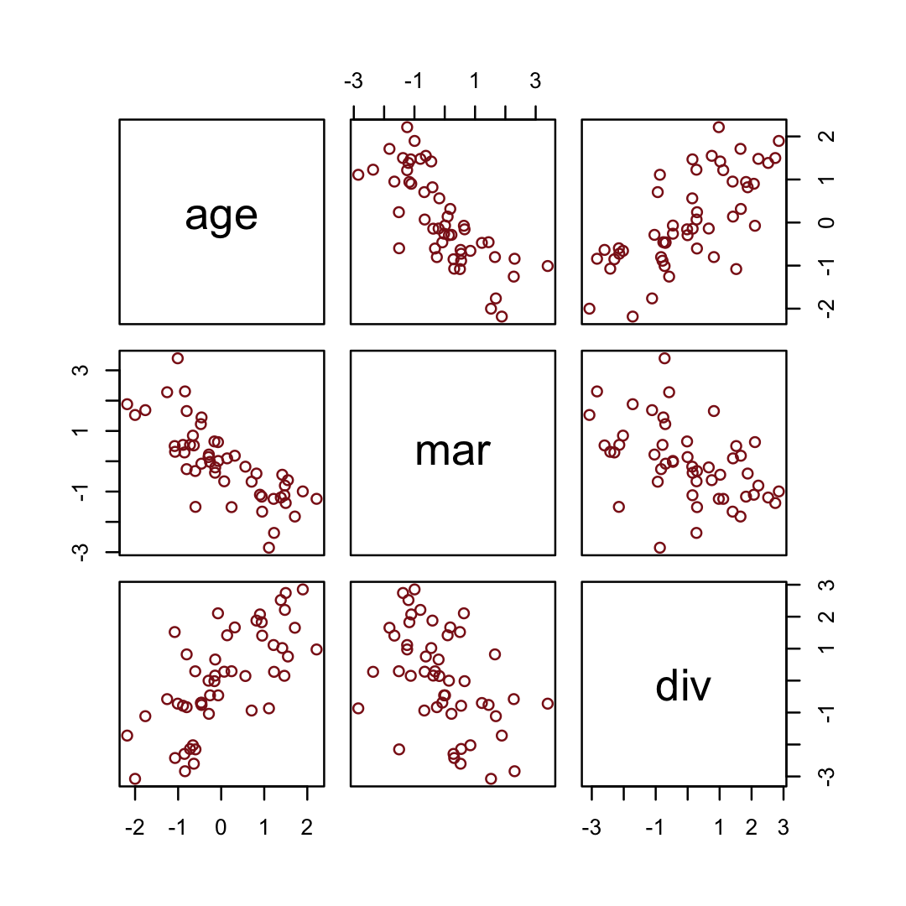
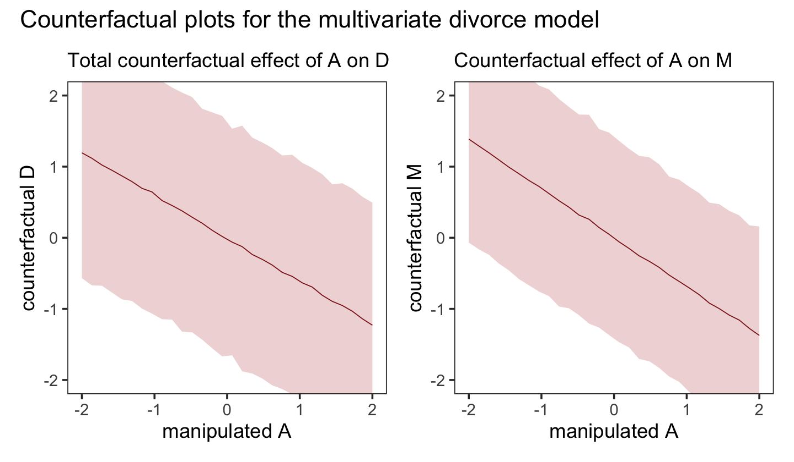

5 The Many Variables & The Spurious Waffles
Correlation in general is not surprising. In large data sets, every pair of variables has a statistically discernible non-zero correlation. But since most correlations do not indicate causal relationships, we need tools for distinguishing mere association from evidence of causation. This is why so much effort is devoted to multiple regression, using more than one predictor variable to simultaneously model an outcome. (McElreath, 2020b, p. 123, emphasis in the original)
In his endnote #80 (p. 562), McElreath wrote: “See Meehl (1990), in particular the ‘crud factor’ described on page 204.” For a fun look at some dubious correlations, check out the examples at https://www.tylervigen.com/spurious-correlations.
But back to the text, McElreath’s listed reasons for multivariable regression include:
- statistical control for confounds
- multiple/complex causation
- interactions
We’ll approach the first two in this chapter. Interactions are reserved for Chapter 7.
5.0.0.1 Rethinking: Causal inference.
“Despite its central importance, there is no unified approach to causal inference yet in the sciences” (p. 124). To dip into the topic, you might check out the recent blog post by Finn Lattimore and David Rohde, Causal inference with Bayes rule.
5.1 Spurious associations
Load the Waffle House data.
Did you notice how we used the package argument within the data() function, there? That allowed us to load the WaffleDivorce without actually loading the rethinking package. Since we generally don’t want to have both rethinking and brms loaded up at the same time, using the package function will save us a line of code.
Now standardize the focal variables with the rethinking::standardize() function.
d <-
d %>%
mutate(d = rethinking::standardize(Divorce),
m = rethinking::standardize(Marriage),
a = rethinking::standardize(MedianAgeMarriage))Because we avoided directly loading the rethinking package, we did not have immediate access to McElreath’s handy standardize() function. If you want to use a function from a package without loading that package, you can use the double colon operator ::. You can learn more about the double colon operator here. Now load brms.
I’m not going to show the output, but you might go ahead and investigate the data with the typical functions. E.g.,
Now we have our data, we can reproduce Figure 5.1. One convenient way to get the handful of sate labels into the plot was with the geom_text_repel() function from the ggrepel package (Slowikowski, 2020). But first, we spent the last few chapters warming up with ggplot2. Going forward, each chapter will have its own plot theme. In this chapter, we’ll characterize the plots with theme_bw() + theme(panel.grid = element_rect()) and coloring based off of "firebrick".
# install.packages("ggrepel", depencencies = T)
library(ggrepel)
d %>%
ggplot(aes(x = WaffleHouses/Population, y = Divorce)) +
stat_smooth(method = "lm", fullrange = T, size = 1/2,
color = "firebrick4", fill = "firebrick", alpha = 1/5) +
geom_point(size = 1.5, color = "firebrick4", alpha = 1/2) +
geom_text_repel(data = d %>% filter(Loc %in% c("ME", "OK", "AR", "AL", "GA", "SC", "NJ")),
aes(label = Loc),
size = 3, seed = 1042) + # this makes it reproducible
scale_x_continuous("Waffle Houses per million", limits = c(0, 55)) +
ylab("Divorce rate") +
coord_cartesian(xlim = c(0, 50), ylim = c(5, 15)) +
theme_bw() +
theme(panel.grid = element_blank())
Since these are geographically-based data, we might plot our three major variables in a map format. The urbnmapr package (Urban Institute, 2020) provides latitude and longitude data for the 50 states and the geom_sf() function for plotting them. We’ll use the left_join() function to combine those data with our primary data d.
# devtools::install_github("UrbanInstitute/urbnmapr")
library(urbnmapr)
left_join(
# get the map data
get_urbn_map(map = "states", sf = TRUE),
# add the primary data
d %>%
mutate(state_name = Location %>% as.character()) %>%
select(d:a, state_name),
by = "state_name"
) %>%
# convert to the long format for faceting
pivot_longer(d:a) %>%
# plot!
ggplot() +
geom_sf(aes(fill = value, geometry = geometry),
size = 0) +
scale_fill_gradient(low = "#f8eaea", high = "firebrick4") +
theme_void() +
theme(legend.position = "none",
strip.text = element_text(margin = margin(0, 0, .5, 0))) +
facet_wrap(~name) One of the advantages of this visualization method is it just became clear that Nevada is missing from the WaffleDivorce data. Execute d %>% distinct(Location) to see for yourself and click here to find out why it’s missing. Those missing data should motivate the skills we’ll cover in Chapter 15. But let’s get back on track.
Here’s the standard deviation for MedianAgeMarriage in its current metric.
## [1] 1.24363Our first statistical model follows the form
\[\begin{align*} \text{divorce_std}_i & \sim \operatorname{Normal}(\mu_i, \sigma) \\ \mu_i & = \alpha + \beta_1 \text{median_age_at_marriage_std}_i \\ \alpha & \sim \operatorname{Normal}(0, 0.2) \\ \beta_1 & \sim \operatorname{Normal}(0, 0.5) \\ \sigma & \sim \operatorname{Exponential}(1), \end{align*}\]
where the _std suffix indicates the variables are standardized (i.e., zero centered, with a standard deviation of one). Let’s fit the first univariable model.
b5.1 <-
brm(data = d,
family = gaussian,
d ~ 1 + a,
prior = c(prior(normal(0, 0.2), class = Intercept),
prior(normal(0, 0.5), class = b),
prior(exponential(1), class = sigma)),
iter = 2000, warmup = 1000, chains = 4, cores = 4,
seed = 5,
sample_prior = T,
file = "fits/b05.01")Did you notice the sample_prior = T line? This told brms to take draws from both the posterior distribution (as usual) and from the prior predictive distribution. If you look at McElreath’s R code 5.4, you’ll see he plotted 50 draws from the prior predictive distribution of his m5.1. For our brms workflow, our first step is the extract our prior draws with prior_samples().
## Rows: 4,000
## Columns: 3
## $ Intercept <dbl> 0.262235852, 0.435592131, -0.294742095, -0.007232040, 0.058308258, 0.050358902,…
## $ b <dbl> 0.01116464, -0.18996254, 0.43071360, -0.60435682, -0.31401810, 0.22439532, -0.0…
## $ sigma <dbl> 2.20380842, 0.57847121, 1.00816092, 2.94427170, 0.30736807, 0.94694471, 0.66062…We ended up with 4,000 draws from the prior predictive distribution, much like posterior_samples() would return 4,000 draws from the posterior. Next we’ll use sample_n() to take a ransom sample from our prior object. After just a little more wrangling, we’ll be in good shape to plot our version of Figure 5.3.
set.seed(5)
prior %>%
sample_n(size = 50) %>%
rownames_to_column("draw") %>%
expand(nesting(draw, Intercept, b),
a = c(-2, 2)) %>%
mutate(d = Intercept + b * a) %>%
ggplot(aes(x = a, y = d)) +
geom_line(aes(group = draw),
color = "firebrick", alpha = .4) +
labs(x = "Median age marriage (std)",
y = "Divorce rate (std)") +
coord_cartesian(ylim = c(-2, 2)) +
theme_bw() +
theme(panel.grid = element_blank()) 
To get the posterior predictions from our brms model, we’ll use fitted() in place of link().
# determine the range of `a` values we'd like to feed into `fitted()`
nd <- tibble(a = seq(from = -3, to = 3.2, length.out = 30))
# now use `fitted()` to get the model-implied trajectories
fitted(b5.1,
newdata = nd) %>%
data.frame() %>%
bind_cols(nd) %>%
# plot
ggplot(aes(x = a)) +
geom_smooth(aes(y = Estimate, ymin = Q2.5, ymax = Q97.5),
stat = "identity",
fill = "firebrick", color = "firebrick4", alpha = 1/5, size = 1/4) +
geom_point(data = d,
aes(y = d),
size = 2, color = "firebrick4") +
labs(x = "Median age marriage (std)",
y = "Divorce rate (std)") +
coord_cartesian(xlim = range(d$a),
ylim = range(d$d)) +
theme_bw() +
theme(panel.grid = element_blank()) 
That’ll serve as our version of the right panel of Figure 5.2. To paraphrase McElreath, “if you inspect the [print()] output, you’ll see that posterior for \([\beta_\text{a}]\) is reliably negative” (p. 127). Let’s see.
## Family: gaussian
## Links: mu = identity; sigma = identity
## Formula: d ~ 1 + a
## Data: d (Number of observations: 50)
## Samples: 4 chains, each with iter = 2000; warmup = 1000; thin = 1;
## total post-warmup samples = 4000
##
## Population-Level Effects:
## Estimate Est.Error l-95% CI u-95% CI Rhat Bulk_ESS Tail_ESS
## Intercept -0.00 0.10 -0.19 0.19 1.00 3996 2866
## a -0.57 0.11 -0.79 -0.34 1.00 3262 2655
##
## Family Specific Parameters:
## Estimate Est.Error l-95% CI u-95% CI Rhat Bulk_ESS Tail_ESS
## sigma 0.82 0.09 0.68 1.01 1.00 3512 2309
##
## Samples were drawn using sampling(NUTS). For each parameter, Bulk_ESS
## and Tail_ESS are effective sample size measures, and Rhat is the potential
## scale reduction factor on split chains (at convergence, Rhat = 1).On the standardized scale, -0.57 95% CI [-0.79, -0.34] is pretty negative, indeed.
We’re ready to fit our second univariable model.
b5.2 <-
brm(data = d,
family = gaussian,
d ~ 1 + m,
prior = c(prior(normal(0, 0.2), class = Intercept),
prior(normal(0, 0.5), class = b),
prior(exponential(1), class = sigma)),
iter = 2000, warmup = 1000, chains = 4, cores = 4,
seed = 5,
file = "fits/b05.02")The summary suggests \(\beta_\text{m}\) is of a smaller magnitude.
## Family: gaussian
## Links: mu = identity; sigma = identity
## Formula: d ~ 1 + m
## Data: d (Number of observations: 50)
## Samples: 4 chains, each with iter = 2000; warmup = 1000; thin = 1;
## total post-warmup samples = 4000
##
## Population-Level Effects:
## Estimate Est.Error l-95% CI u-95% CI Rhat Bulk_ESS Tail_ESS
## Intercept -0.00 0.11 -0.22 0.22 1.00 4140 3154
## m 0.35 0.13 0.09 0.61 1.00 3307 2899
##
## Family Specific Parameters:
## Estimate Est.Error l-95% CI u-95% CI Rhat Bulk_ESS Tail_ESS
## sigma 0.95 0.10 0.79 1.17 1.00 4091 2703
##
## Samples were drawn using sampling(NUTS). For each parameter, Bulk_ESS
## and Tail_ESS are effective sample size measures, and Rhat is the potential
## scale reduction factor on split chains (at convergence, Rhat = 1).Now we’ll wangle and plot our version of the left panel in Figure 5.2.
nd <- tibble(m = seq(from = -2.5, to = 3.5, length.out = 30))
fitted(b5.2, newdata = nd) %>%
data.frame() %>%
bind_cols(nd) %>%
ggplot(aes(x = m)) +
geom_smooth(aes(y = Estimate, ymin = Q2.5, ymax = Q97.5),
stat = "identity",
fill = "firebrick", color = "firebrick4", alpha = 1/5, size = 1/4) +
geom_point(data = d,
aes(y = d),
size = 2, color = "firebrick4") +
labs(x = "Marriage rate (std)",
y = "Divorce rate (std)") +
coord_cartesian(xlim = range(d$m),
ylim = range(d$d)) +
theme_bw() +
theme(panel.grid = element_blank()) 
But merely comparing parameter means between different bivariate regressions is no way to decide which predictor is better. Both of these predictors could provide independent value, or they could be redundant, or one could eliminate the value of the other.
To make sense of this, we’re going to have to think causally. And then, only after we’ve done some thinking, a bigger regression model that includes both age at marriage and marriage rate will help us. (pp. 127–128)
5.1.1 Think before you regress.
It is helpful to introduce a particular type of causal graph known as a DAG, short for directed acyclic graph. Graph means it is nodes and connections. Directed means the connections have arrows that indicate directions of causal influence. And acyclic means that causes do not eventually flow back on themselves. A DAG is a way of describing qualitative causal relationships among variables. It isn’t as detailed as a full model description, but it contains information that a purely statistical model does not. Unlike a statistical model, a DAG will tell you the consequences of intervening to change a variable. But only if the DAG is correct. There is no inference without assumption. (p. 128, emphasis in the original)
If you’re interested in making directed acyclic graphs (DAG) in R, the dagitty (Textor & der Zander, 2016) and ggdag (Barrett, 2020a) packages are handy. Our approach will focus on ggdag.
# install.packages("dagitty", dependencies = T)
# install.packages("ggdag", dependencies = T)
# library(dagitty)
library(ggdag)If all you want is a quick and dirty DAG for our three variables, you can execute something like this.
We can pretty it up a little, too.
dag_coords <-
tibble(name = c("A", "M", "D"),
x = c(1, 3, 2),
y = c(2, 2, 1))
p1 <-
dagify(M ~ A,
D ~ A + M,
coords = dag_coords) %>%
ggplot(aes(x = x, y = y, xend = xend, yend = yend)) +
geom_dag_point(color = "firebrick", alpha = 1/4, size = 10) +
geom_dag_text(color = "firebrick") +
geom_dag_edges(edge_color = "firebrick") +
scale_x_continuous(NULL, breaks = NULL, expand = c(.1, .1)) +
scale_y_continuous(NULL, breaks = NULL, expand = c(.1, .1)) +
theme_bw() +
theme(panel.grid = element_blank())
p1
We could have left out the coords argument and let the dagify() function set the layout of the nodes on its own. But since we were picky and wanted to ape McElreath, we first specified our coordinates in a tibble and then included that tibble in the coords argument. For more on the topic, check out the Barrett’s (2020b) vignette, An Introduction to ggdag.
Buy anyway, our DAG
represents a heuristic causal model. Like other models, it is an analytical assumption. The symbols \(A\), \(M\), and \(D\) are our observed variables. The arrows show directions of influence. What this DAG says is:
- \(A\) directly influences \(D\)
- \(M\) directly influences \(D\)
- \(A\) directly influences \(M\)
These statements can then have further implications. In this case, age of marriage influences divorce in two ways. First it has a direct effect, \(A \rightarrow D\). Perhaps a direct effect would arise because younger people change faster than older people and are therefore more likely to grow incompatible with a partner. Second, it has an indirect effect by influencing the marriage rate, which then influences divorce, \(A \rightarrow M \rightarrow D\). If people get married earlier, then the marriage rate may rise, because there are more young people. (p. 128)
Considering alternative models, “It could be that the association between \(M\) and \(D\) arises entirely from \(A\)’s influence on both \(M\) and \(D\). Like this:” (p. 129)
p2 <-
dagify(M ~ A,
D ~ A,
coords = dag_coords) %>%
ggplot(aes(x = x, y = y, xend = xend, yend = yend)) +
geom_dag_point(color = "firebrick", alpha = 1/4, size = 10) +
geom_dag_text(color = "firebrick") +
geom_dag_edges(edge_color = "firebrick") +
scale_x_continuous(NULL, breaks = NULL, expand = c(.1, .1)) +
scale_y_continuous(NULL, breaks = NULL, expand = c(.1, .1)) +
theme_bw() +
theme(panel.grid = element_blank())
p2
This DAG is also consistent with the posterior distributions of models [
b5.1] and [b5.2]. Why? Because both \(M\) and \(D\) “listen” to \(A\). They have information from \(A\). So when you inspect the association between \(D\) and \(M\), you pick up that common information that they both got from listening to \(A\). You’ll see a more formal way to deduce this, in the next chapter.So which is it? Is there a direct effect of marriage rate, or rather is age at marriage just driving both, creating a spurious correlation between marriage rate and divorce rate? To find out, we need to consider carefully what each DAG implies. That’s what’s next. (p. 129)
5.1.1.1 Rethinking: What’s a cause?
Questions of causation can become bogged down in philosophical debates. These debates are worth having. But they don’t usually intersect with statistical concerns. Knowing a cause in statistics means being able to correctly predict the consequences of an intervention. There are contexts in which even this is complicated. (p. 129)
5.1.2 Testable implications.
So far, we have entertained two DAGs. Here we use patchwork to combine them into one plot.
McElreath encouraged us to examine the correlations among these three variables with cor().
## d m a
## d 1.0000000 0.3737314 -0.5972392
## m 0.3737314 1.0000000 -0.7210960
## a -0.5972392 -0.7210960 1.0000000If you just want the lower triangle, you can use the lowerCor() function from the psych package (Revelle, 2020).
## d m a
## d 1.000
## m 0.374 1.000
## a -0.597 -0.721 1.000Our second DAG, above, suggests “that \(D\) is independent of \(M\), conditional on \(A\)” (p. 130). We can use the dagitty::impliedConditionalIndependencies() function to express that conditional independence in formal notation.
## D _||_ M | AThe lack of conditional dependencies in the first DAG may be expressed this way.
Okay, that was a bit of a tease. “There are no conditional independencies, so there is no output to display” (p. 131). To close out this section,
once you fit a multiple regression to predict divorce using both marriage rate and age at marriage, the model addresses the questions:
- After I already know marriage rate, what additional value is there in also knowing age at marriage?
- After I already know age at marriage, what additional value is there in also knowing marriage rate?
The parameter estimates corresponding to each predictor are the (often opaque) answers to these questions. The questions above are descriptive, and the answers are also descriptive. It is only the derivation of the testable implications above that gives these descriptive results a causal meaning. But that meaning is still dependent upon believing the DAG. (p. 131)
5.1.3 Multiple regression notation.
We can write the statistical formula for our first multivariable model as
\[\begin{align*} \text{Divorce_std}_i & \sim \operatorname{Normal}(\mu_i, \sigma) \\ \mu_i & = \alpha + \beta_1 \text{Marriage_std}_i + \beta_2 \text{MedianAgeMarriage_std}_i \\ \alpha & \sim \operatorname{Normal}(0, 0.2) \\ \beta_1 & \sim \operatorname{Normal}(0, 0.5) \\ \beta_2 & \sim \operatorname{Normal}(0, 0.5) \\ \sigma & \sim \operatorname{Exponential}(1). \end{align*}\]
5.1.4 Approximating the posterior.
Much like we used the + operator to add single predictors to the intercept, we just use more + operators in the formula argument to add more predictors. Also notice we’re using the same prior prior(normal(0, 1), class = b) for both predictors. Within the brms framework, they are both of class = b. But if we wanted their priors to differ, we’d make two prior() statements and differentiate them with the coef argument. You’ll see examples of that later on.
b5.3 <-
brm(data = d,
family = gaussian,
d ~ 1 + m + a,
prior = c(prior(normal(0, 0.2), class = Intercept),
prior(normal(0, 0.5), class = b),
prior(exponential(1), class = sigma)),
iter = 2000, warmup = 1000, chains = 4, cores = 4,
seed = 5,
file = "fits/b05.03")Behold the summary.
## Family: gaussian
## Links: mu = identity; sigma = identity
## Formula: d ~ 1 + m + a
## Data: d (Number of observations: 50)
## Samples: 4 chains, each with iter = 2000; warmup = 1000; thin = 1;
## total post-warmup samples = 4000
##
## Population-Level Effects:
## Estimate Est.Error l-95% CI u-95% CI Rhat Bulk_ESS Tail_ESS
## Intercept -0.00 0.10 -0.19 0.20 1.00 4036 2610
## m -0.06 0.16 -0.37 0.25 1.00 2532 2536
## a -0.61 0.16 -0.91 -0.30 1.00 2522 2486
##
## Family Specific Parameters:
## Estimate Est.Error l-95% CI u-95% CI Rhat Bulk_ESS Tail_ESS
## sigma 0.83 0.09 0.68 1.02 1.00 3601 2653
##
## Samples were drawn using sampling(NUTS). For each parameter, Bulk_ESS
## and Tail_ESS are effective sample size measures, and Rhat is the potential
## scale reduction factor on split chains (at convergence, Rhat = 1).The brms package doesn’t have a convenience function like rethinking::coeftab(). However, we can make something similar with a little deft wrangling and ggplot2 code.
# first, extract and rename the necessary posterior parameters
bind_cols(
posterior_samples(b5.1) %>%
transmute(`b5.1_beta[A]` = b_a),
posterior_samples(b5.2) %>%
transmute(`b5.2_beta[M]` = b_m),
posterior_samples(b5.3) %>%
transmute(`b5.3_beta[M]` = b_m,
`b5.3_beta[A]` = b_a)
) %>%
# convert them to the long format, group, and get the posterior summaries
pivot_longer(everything()) %>%
group_by(name) %>%
summarise(mean = mean(value),
ll = quantile(value, prob = .025),
ul = quantile(value, prob = .975)) %>%
# since the `key` variable is really two variables in one, here we split them up
separate(name, into = c("fit", "parameter"), sep = "_") %>%
# plot!
ggplot(aes(x = mean, xmin = ll, xmax = ul, y = fit)) +
geom_vline(xintercept = 0, color = "firebrick", alpha = 1/5) +
geom_pointrange(color = "firebrick") +
labs(x = "posterior", y = NULL) +
theme_bw() +
theme(panel.grid = element_blank(),
strip.background = element_rect(fill = "transparent", color = "transparent")) +
facet_wrap(~parameter, ncol = 1, labeller = label_parsed)Don’t worry, coefficient plots won’t always be this complicated. We’ll walk out simpler ones toward the end of the chapter.
The substantive interpretation of all those coefficients is: “Once we know median age at marriage for a State, there is little or no additional predictive power in also knowing the rate of marriage in that State” (p. 134, emphasis in the original). This coheres well with one of our impliedConditionalIndependencies() statements, from above.
## D _||_ M | A5.1.4.1 Overthinking: Simulating the divorce example.
Okay, let’s simulate our divorce data in a tidyverse sort of way.
# how many states would you like?
n <- 50
set.seed(5)
sim_d <-
tibble(age = rnorm(n, mean = 0, sd = 1)) %>% # sim A
mutate(mar = rnorm(n, mean = -age, sd = 1), # sim A -> M
div = rnorm(n, mean = age, sd = 1)) # sim A -> D
head(sim_d)## # A tibble: 6 x 3
## age mar div
## <dbl> <dbl> <dbl>
## 1 -0.841 2.30 -2.84
## 2 1.38 -1.20 2.52
## 3 -1.26 2.28 -0.580
## 4 0.0701 -0.662 0.279
## 5 1.71 -1.82 1.65
## 6 -0.603 -0.322 0.291We simulated those data based on this formulation.
## divorce _||_ marriage | ageHere are the quick pairs() plots.

If we use the update() function, we can refit the last models in haste.
b5.1_sim <-
update(b5.1,
newdata = sim_d,
formula = div ~ 1 + age,
seed = 5,
file = "fits/b05.01_sim")
b5.2_sim <-
update(b5.2,
newdata = sim_d,
formula = div ~ 1 + mar,
seed = 5,
file = "fits/b05.02_sim")
b5.3_sim <-
update(b5.3,
newdata = sim_d,
formula = div ~ 1 + mar + age,
seed = 5,
file = "fits/b05.03_sim")The steps for our homemade coefplot() plot are basically the same. Just switch out some of the names.
bind_cols(
posterior_samples(b5.1_sim) %>%
transmute(`b5.1_beta[A]` = b_age),
posterior_samples(b5.2_sim) %>%
transmute(`b5.2_beta[M]` = b_mar),
posterior_samples(b5.3_sim) %>%
transmute(`b5.3_beta[M]` = b_mar,
`b5.3_beta[A]` = b_age)
) %>%
pivot_longer(everything()) %>%
group_by(name) %>%
summarise(mean = mean(value),
ll = quantile(value, prob = .025),
ul = quantile(value, prob = .975)) %>%
# since the `key` variable is really two variables in one, here we split them up
separate(name, into = c("fit", "parameter"), sep = "_") %>%
# plot!
ggplot(aes(x = mean, xmin = ll, xmax = ul, y = fit)) +
geom_vline(xintercept = 0, color = "firebrick", alpha = 1/5) +
geom_pointrange(color = "firebrick") +
labs(x = "posterior", y = NULL) +
theme_bw() +
theme(panel.grid = element_blank(),
strip.background = element_blank()) +
facet_wrap(~parameter, ncol = 1, labeller = label_parsed)Well, okay. This is the same basic pattern, but with the signs switched and with a little simulation variability thrown in. But you get the picture.
5.1.5 Plotting multivariate posteriors.
“Let’s pause for a moment, before moving on. There are a lot of moving parts here: three variables, some strange DAGs, and three models. If you feel at all confused, it is only because you are paying attention” (p. 133).
Preach, brother.
Down a little further, McElreath gave us this deflationary delight: “There is a huge literature detailing a variety of plotting techniques that all attempt to help one understand multiple linear regression. None of these techniques is suitable for all jobs, and most do not generalize beyond linear regression” (pp. 134–135). Now you’re inspired, let’s learn three:
- predictor residual plots
- posterior prediction plots
- counterfactual plots
5.1.5.1 Predictor residual plots.
To get ready to make our residual plots, we’ll predict one predictor, m, with another one, a.
b5.4 <-
brm(data = d,
family = gaussian,
m ~ 1 + a,
prior = c(prior(normal(0, 0.2), class = Intercept),
prior(normal(0, 0.5), class = b),
prior(exponential(1), class = sigma)),
iter = 2000, warmup = 1000, chains = 4, cores = 4,
seed = 5,
file = "fits/b05.04")## Family: gaussian
## Links: mu = identity; sigma = identity
## Formula: m ~ 1 + a
## Data: d (Number of observations: 50)
## Samples: 4 chains, each with iter = 2000; warmup = 1000; thin = 1;
## total post-warmup samples = 4000
##
## Population-Level Effects:
## Estimate Est.Error l-95% CI u-95% CI Rhat Bulk_ESS Tail_ESS
## Intercept -0.00 0.09 -0.18 0.18 1.00 3699 3022
## a -0.69 0.10 -0.89 -0.50 1.00 3628 2808
##
## Family Specific Parameters:
## Estimate Est.Error l-95% CI u-95% CI Rhat Bulk_ESS Tail_ESS
## sigma 0.71 0.07 0.59 0.87 1.00 3316 2683
##
## Samples were drawn using sampling(NUTS). For each parameter, Bulk_ESS
## and Tail_ESS are effective sample size measures, and Rhat is the potential
## scale reduction factor on split chains (at convergence, Rhat = 1).With fitted(), we compute the expected values for each state (with the exception of Nevada). Since the a values for each state are in the date we used to fit the model, we’ll omit the newdata argument.
## Rows: 50
## Columns: 20
## $ Estimate <dbl> 0.41910637, 0.47479957, 0.14064036, 0.97603837, -0.41629164, 0.19633356…
## $ Est.Error <dbl> 0.10921357, 0.11410274, 0.09208704, 0.16994304, 0.10790150, 0.09434686,…
## $ Q2.5 <dbl> 0.20609178, 0.25056245, -0.04056262, 0.64629944, -0.62775040, 0.0123522…
## $ Q97.5 <dbl> 0.63362431, 0.69624957, 0.32271400, 1.30996611, -0.20523617, 0.38152568…
## $ Location <fct> Alabama, Alaska, Arizona, Arkansas, California, Colorado, Connecticut, …
## $ Loc <fct> AL, AK, AZ, AR, CA, CO, CT, DE, DC, FL, GA, HI, ID, IL, IN, IA, KS, KY,…
## $ Population <dbl> 4.78, 0.71, 6.33, 2.92, 37.25, 5.03, 3.57, 0.90, 0.60, 18.80, 9.69, 1.3…
## $ MedianAgeMarriage <dbl> 25.3, 25.2, 25.8, 24.3, 26.8, 25.7, 27.6, 26.6, 29.7, 26.4, 25.9, 26.9,…
## $ Marriage <dbl> 20.2, 26.0, 20.3, 26.4, 19.1, 23.5, 17.1, 23.1, 17.7, 17.0, 22.1, 24.9,…
## $ Marriage.SE <dbl> 1.27, 2.93, 0.98, 1.70, 0.39, 1.24, 1.06, 2.89, 2.53, 0.58, 0.81, 2.54,…
## $ Divorce <dbl> 12.7, 12.5, 10.8, 13.5, 8.0, 11.6, 6.7, 8.9, 6.3, 8.5, 11.5, 8.3, 7.7, …
## $ Divorce.SE <dbl> 0.79, 2.05, 0.74, 1.22, 0.24, 0.94, 0.77, 1.39, 1.89, 0.32, 0.58, 1.27,…
## $ WaffleHouses <int> 128, 0, 18, 41, 0, 11, 0, 3, 0, 133, 381, 0, 0, 2, 17, 0, 6, 64, 66, 0,…
## $ South <int> 1, 0, 0, 1, 0, 0, 0, 0, 0, 1, 1, 0, 0, 0, 0, 0, 0, 1, 1, 0, 0, 0, 0, 0,…
## $ Slaves1860 <int> 435080, 0, 0, 111115, 0, 0, 0, 1798, 0, 61745, 462198, 0, 0, 0, 0, 0, 2…
## $ Population1860 <int> 964201, 0, 0, 435450, 379994, 34277, 460147, 112216, 75080, 140424, 105…
## $ PropSlaves1860 <dbl> 4.5e-01, 0.0e+00, 0.0e+00, 2.6e-01, 0.0e+00, 0.0e+00, 0.0e+00, 1.6e-02,…
## $ d <dbl> 1.6542053, 1.5443643, 0.6107159, 2.0935693, -0.9270579, 1.0500799, -1.6…
## $ m <dbl> 0.02264406, 1.54980162, 0.04897436, 1.65512283, -0.26698927, 0.89154405…
## $ a <dbl> -0.6062895, -0.6866993, -0.2042408, -1.4103870, 0.5998567, -0.2846505, …After a little data processing, we can make the upper left panel of Figure 5.4.
p1 <-
f %>%
ggplot(aes(x = a, y = m)) +
geom_point(size = 2, shape = 1, color = "firebrick4") +
geom_segment(aes(xend = a, yend = Estimate),
size = 1/4) +
geom_line(aes(y = Estimate),
color = "firebrick4") +
geom_text_repel(data = . %>% filter(Loc %in% c("WY", "ND", "ME", "HI", "DC")),
aes(label = Loc),
size = 3, seed = 14) +
labs(x = "Age at marriage (std)",
y = "Marriage rate (std)") +
coord_cartesian(ylim = range(d$m)) +
theme_bw() +
theme(panel.grid = element_blank())
p1We get the residuals with the well-named residuals() function. Much like with brms::fitted(), brms::residuals() returns a four-vector matrix with the number of rows equal to the number of observations in the original data (by default, anyway). The vectors have the familiar names: Estimate, Est.Error, Q2.5, and Q97.5. See the brms reference manual (Bürkner, 2020b) for details.
With our residuals in hand, we just need a little more data processing to make lower left panel of Figure 5.4.
r <-
residuals(b5.4) %>%
# To use this in ggplot2, we need to make it a tibble or data frame
as_tibble() %>%
bind_cols(d)
p3 <-
r %>%
ggplot(aes(x = Estimate, y = d)) +
stat_smooth(method = "lm", fullrange = T,
color = "firebrick4", fill = "firebrick4",
alpha = 1/5, size = 1/2) +
geom_vline(xintercept = 0, linetype = 2, color = "grey50") +
geom_point(size = 2, color = "firebrick4", alpha = 2/3) +
geom_text_repel(data = . %>% filter(Loc %in% c("WY", "ND", "ME", "HI", "DC")),
aes(label = Loc),
size = 3, seed = 5) +
scale_x_continuous(limits = c(-2, 2)) +
coord_cartesian(xlim = range(r$Estimate)) +
labs(x = "Marriage rate residuals",
y = "Divorce rate (std)") +
theme_bw() +
theme(panel.grid = element_blank())
p3
To get the MedianAgeMarriage_s residuals, we have to fit the corresponding model where m predicts a.
b5.4b <-
brm(data = d,
family = gaussian,
a ~ 1 + m,
prior = c(prior(normal(0, 0.2), class = Intercept),
prior(normal(0, 0.5), class = b),
prior(exponential(1), class = sigma)),
iter = 2000, warmup = 1000, chains = 4, cores = 4,
seed = 5,
file = "fits/b05.04b")With b5.4b in hand, we’re ready to make the upper right panel of Figure 5.4.
p2 <-
fitted(b5.4b) %>%
data.frame() %>%
bind_cols(d) %>%
ggplot(aes(x = m, y = a)) +
geom_point(size = 2, shape = 1, color = "firebrick4") +
geom_segment(aes(xend = m, yend = Estimate),
size = 1/4) +
geom_line(aes(y = Estimate),
color = "firebrick4") +
geom_text_repel(data = . %>% filter(Loc %in% c("DC", "HI", "ID")),
aes(label = Loc),
size = 3, seed = 5) +
labs(x = "Marriage rate (std)",
y = "Age at marriage (std)") +
coord_cartesian(ylim = range(d$a)) +
theme_bw() +
theme(panel.grid = element_blank())
p2
And now we’ll get the new batch of residuals, do a little data processing, and make a plot corresponding to the final panel of Figure 5.4.
r <-
residuals(b5.4b) %>%
data.frame() %>%
bind_cols(d)
p4 <-
r %>%
ggplot(aes(x = Estimate, y = d)) +
stat_smooth(method = "lm", fullrange = T,
color = "firebrick4", fill = "firebrick4",
alpha = 1/5, size = 1/2) +
geom_vline(xintercept = 0, linetype = 2, color = "grey50") +
geom_point(size = 2, color = "firebrick4", alpha = 2/3) +
geom_text_repel(data = . %>% filter(Loc %in% c("ID", "HI", "DC")),
aes(label = Loc),
size = 3, seed = 5) +
scale_x_continuous(limits = c(-2, 3)) +
coord_cartesian(xlim = range(r$Estimate),
ylim = range(d$d)) +
labs(x = "Age at marriage residuals",
y = "Divorce rate (std)") +
theme_bw() +
theme(panel.grid = element_blank())
p4
Here we close out the section by combining our four subplots into one glorious whole with a little patchwork syntax.

5.1.5.1.1 Rethinking: Residuals are parameters, not data.
There is a tradition, especially in parts of biology, of using residuals from one model as data in another model. For example, a biologist might regress brain size on body size and then use the brain size residuals as data in another model. This procedure is always a mistake. Residuals are not known. They are parameters, variables with unobserved values. Treating them as known values throws away uncertainty. (p. 137)
Let’s hammer this point home. Recall how brms::residuals() returns four columns: Estimate, Est.Error, Q2.5, and Q97.5.
## Rows: 50
## Columns: 20
## $ Estimate <dbl> -0.58902924, 0.38776286, -0.16875288, -0.26301441, 0.41661319, 0.334121…
## $ Est.Error <dbl> 0.08768933, 0.17676818, 0.08778774, 0.18591313, 0.09165187, 0.12435474,…
## $ Q2.5 <dbl> -0.75889766, 0.03461877, -0.33885619, -0.63501083, 0.23443209, 0.082321…
## $ Q97.5 <dbl> -0.4185013025, 0.7310140636, 0.0006765707, 0.0975187886, 0.5958362565, …
## $ Location <fct> Alabama, Alaska, Arizona, Arkansas, California, Colorado, Connecticut, …
## $ Loc <fct> AL, AK, AZ, AR, CA, CO, CT, DE, DC, FL, GA, HI, ID, IL, IN, IA, KS, KY,…
## $ Population <dbl> 4.78, 0.71, 6.33, 2.92, 37.25, 5.03, 3.57, 0.90, 0.60, 18.80, 9.69, 1.3…
## $ MedianAgeMarriage <dbl> 25.3, 25.2, 25.8, 24.3, 26.8, 25.7, 27.6, 26.6, 29.7, 26.4, 25.9, 26.9,…
## $ Marriage <dbl> 20.2, 26.0, 20.3, 26.4, 19.1, 23.5, 17.1, 23.1, 17.7, 17.0, 22.1, 24.9,…
## $ Marriage.SE <dbl> 1.27, 2.93, 0.98, 1.70, 0.39, 1.24, 1.06, 2.89, 2.53, 0.58, 0.81, 2.54,…
## $ Divorce <dbl> 12.7, 12.5, 10.8, 13.5, 8.0, 11.6, 6.7, 8.9, 6.3, 8.5, 11.5, 8.3, 7.7, …
## $ Divorce.SE <dbl> 0.79, 2.05, 0.74, 1.22, 0.24, 0.94, 0.77, 1.39, 1.89, 0.32, 0.58, 1.27,…
## $ WaffleHouses <int> 128, 0, 18, 41, 0, 11, 0, 3, 0, 133, 381, 0, 0, 2, 17, 0, 6, 64, 66, 0,…
## $ South <int> 1, 0, 0, 1, 0, 0, 0, 0, 0, 1, 1, 0, 0, 0, 0, 0, 0, 1, 1, 0, 0, 0, 0, 0,…
## $ Slaves1860 <int> 435080, 0, 0, 111115, 0, 0, 0, 1798, 0, 61745, 462198, 0, 0, 0, 0, 0, 2…
## $ Population1860 <int> 964201, 0, 0, 435450, 379994, 34277, 460147, 112216, 75080, 140424, 105…
## $ PropSlaves1860 <dbl> 4.5e-01, 0.0e+00, 0.0e+00, 2.6e-01, 0.0e+00, 0.0e+00, 0.0e+00, 1.6e-02,…
## $ d <dbl> 1.6542053, 1.5443643, 0.6107159, 2.0935693, -0.9270579, 1.0500799, -1.6…
## $ m <dbl> 0.02264406, 1.54980162, 0.04897436, 1.65512283, -0.26698927, 0.89154405…
## $ a <dbl> -0.6062895, -0.6866993, -0.2042408, -1.4103870, 0.5998567, -0.2846505, …In the residual plots from the lower two panels of Figure 5.4, we focused on the means of the residuals (i.e., Estimate). However, we can express the uncertainty in the residuals by including error bars for the 95% intervals. Here’s what that might look like with a slight reworking of the lower right panel of Figure 5.4.
r %>%
ggplot(aes(x = Estimate, y = d)) +
stat_smooth(method = "lm", fullrange = T,
color = "firebrick4", fill = "firebrick4",
alpha = 1/5, size = 1/2) +
geom_vline(xintercept = 0, linetype = 2, color = "grey50") +
# the only change is here
geom_pointrange(aes(xmin = Q2.5, xmax = Q97.5),
color = "firebrick4", alpha = 2/3) +
geom_text_repel(data = . %>% filter(Loc %in% c("ID", "HI", "DC")),
aes(label = Loc),
size = 3, seed = 5) +
scale_x_continuous(limits = c(-2, 3)) +
coord_cartesian(xlim = range(r$Estimate),
ylim = range(d$d)) +
labs(x = "Age at marriage residuals",
y = "Divorce rate (std)") +
theme_bw() +
theme(panel.grid = element_blank())
Look at that. If you were to fit a follow-up model based on only the point estimates (posterior means) of those residuals, you’d be ignoring a lot of uncertainty.
5.1.5.2 Posterior prediction plots.
“It’s important to check the model’s implied predictions against the observed data” (p. 137). For more on the topic, check out Gabry and colleagues’ (2019) Visualization in Bayesian workflow or Simpson’s related blog post, Touch me, I want to feel your data.
The code below will make our version of Figure 5.5.
fitted(b5.3) %>%
data.frame() %>%
# unstandardize the model predictions
mutate_all(~. * sd(d$Divorce) + mean(d$Divorce)) %>%
bind_cols(d) %>%
ggplot(aes(x = Divorce, y = Estimate)) +
geom_abline(linetype = 2, color = "grey50", size = .5) +
geom_point(size = 1.5, color = "firebrick4", alpha = 3/4) +
geom_linerange(aes(ymin = Q2.5, ymax = Q97.5),
size = 1/4, color = "firebrick4") +
geom_text(data = . %>% filter(Loc %in% c("ID", "UT", "RI", "ME")),
aes(label = Loc),
hjust = 1, nudge_x = - 0.25) +
labs(x = "Observed divorce", y = "Predicted divorce") +
theme_bw() +
theme(panel.grid = element_blank())It’s easy to see from this arrangement of the simulations that the model under-predicts for States with very high divorce rates while it over-predicts for States with very low divorce rates. That’s normal. This is what regression does–it is skeptical of extreme values, so it expects regression towards the mean. But beyond this general regression to the mean, some States are very frustrating to the model, lying very far from the diagonal. (p. 139)
5.1.5.2.1 Rethinking: Stats, huh, yeah what is it good for?
Often people want statistical modeling to do things that statistical modeling cannot do. For example, we’d like to know whether an effect is “real” or rather spurious. Unfortunately, modeling merely quantifies uncertainty in the precise way that the model understands the problem. Usually answers to large world questions about truth and causation depend upon information not included in the model. For example, any observed correlation between an outcome and predictor could be eliminated or reversed once another predictor is added to the model. But if we cannot think of the right variable, we might never notice. Therefore all statistical models are vulnerable to and demand critique, regardless of the precision of their estimates and apparent accuracy of their predictions. (p. 139)
5.1.5.2.2 Overthinking: Simulating spurious association.
n <- 100 # number of cases
set.seed(5) # setting the seed makes the results reproducible
d_spur <-
tibble(x_real = rnorm(n), # x_real as Gaussian with mean 0 and SD 1 (i.e., the defaults)
x_spur = rnorm(n, x_real), # x_spur as Gaussian with mean = x_real
y = rnorm(n, x_real)) # y as Gaussian with mean = x_realHere are the quick pairs() plots.

We may as well fit and evaluate a model.
b5.0_spur <-
brm(data = d_spur,
family = gaussian,
y ~ 1 + x_real + x_spur,
prior = c(prior(normal(0, 0.2), class = Intercept),
prior(normal(0, 0.5), class = b),
prior(exponential(1), class = sigma)),
iter = 2000, warmup = 1000, chains = 4, cores = 4,
seed = 5,
file = "fits/b05.00_spur")## Estimate Est.Error Q2.5 Q97.5
## Intercept -0.01 0.09 -0.18 0.17
## x_real 0.93 0.14 0.65 1.20
## x_spur 0.08 0.09 -0.09 0.26If we let “r” stand for x_rel and “s” stand for x_spur, here’s how we might depict that our simulation in a DAG.
dag_coords <-
tibble(name = c("r", "s", "y"),
x = c(1, 3, 2),
y = c(2, 2, 1))
dagify(s ~ r,
y ~ r,
coords = dag_coords) %>%
ggplot(aes(x = x, y = y, xend = xend, yend = yend)) +
geom_dag_point(color = "firebrick", alpha = 1/4, size = 10) +
geom_dag_text(color = "firebrick") +
geom_dag_edges(edge_color = "firebrick") +
scale_x_continuous(NULL, breaks = NULL, expand = c(.1, .1)) +
scale_y_continuous(NULL, breaks = NULL, expand = c(.1, .1)) +
theme_bw() +
theme(panel.grid = element_blank()) 
5.1.5.3 Counterfactual plots.
A second sort of inferential plot displays the causal implications of the model. I call these plots counterfactual, because they can be produced for any values of the predictor variables you like, even unobserved combinations like very high median age of marriage and very high marriage rate. There are no States with this combination, but in a counterfactual plot, you can ask the model for a prediction for such a State. (p. 140, emphasis in the original)
Take another look at one of the DAGs from back in Section 5.1.2.
dag_coords <-
tibble(name = c("A", "M", "D"),
x = c(1, 3, 2),
y = c(2, 2, 1))
dagify(M ~ A,
D ~ A + M,
coords = dag_coords) %>%
ggplot(aes(x = x, y = y, xend = xend, yend = yend)) +
geom_dag_point(color = "firebrick", alpha = 1/4, size = 10) +
geom_dag_text(color = "firebrick") +
geom_dag_edges(edge_color = "firebrick") +
scale_x_continuous(NULL, breaks = NULL, expand = c(.1, .1)) +
scale_y_continuous(NULL, breaks = NULL, expand = c(.1, .1)) +
theme_bw() +
theme(panel.grid = element_blank())
The full statistical model implied in this DAG requires we have two criterion variables, \(D\) and \(M\). To simultaneously model the effects of \(A\) on \(M\) and \(D\) AND the effects of \(A\) on \(M\) with brms, we’ll need to invoke the multivariate syntax. There are several ways to do this with brms, which Bürkner outlines in his (2020g) vignette, Estimating multivariate models with brms. At this point, it’s important to recognize we have two regression models. As a first step, we might specify each model separately in a bf() function and save them as objects.
Next we will combine our bf() objects with the + operator within the brm() function. For a model like this, we also specify set_rescor(FALSE) to prevent brms from adding a residual correlation between d and m. Also, notice how each prior statement includes a resp argument. This clarifies which sub-model the prior refers to.
b5.3_A <-
brm(data = d,
family = gaussian,
d_model + m_model + set_rescor(FALSE),
prior = c(prior(normal(0, 0.2), class = Intercept, resp = d),
prior(normal(0, 0.5), class = b, resp = d),
prior(exponential(1), class = sigma, resp = d),
prior(normal(0, 0.2), class = Intercept, resp = m),
prior(normal(0, 0.5), class = b, resp = m),
prior(exponential(1), class = sigma, resp = m)),
iter = 2000, warmup = 1000, chains = 4, cores = 4,
seed = 5,
file = "fits/b05.03_A")Look at the summary.
## Family: MV(gaussian, gaussian)
## Links: mu = identity; sigma = identity
## mu = identity; sigma = identity
## Formula: d ~ 1 + a + m
## m ~ 1 + a
## Data: d (Number of observations: 50)
## Samples: 4 chains, each with iter = 2000; warmup = 1000; thin = 1;
## total post-warmup samples = 4000
##
## Population-Level Effects:
## Estimate Est.Error l-95% CI u-95% CI Rhat Bulk_ESS Tail_ESS
## d_Intercept -0.00 0.10 -0.20 0.19 1.00 6100 3001
## m_Intercept 0.00 0.09 -0.17 0.17 1.00 5988 3295
## d_a -0.60 0.16 -0.91 -0.30 1.00 3350 3309
## d_m -0.06 0.15 -0.36 0.24 1.00 3575 3316
## m_a -0.69 0.10 -0.88 -0.50 1.00 5653 3081
##
## Family Specific Parameters:
## Estimate Est.Error l-95% CI u-95% CI Rhat Bulk_ESS Tail_ESS
## sigma_d 0.82 0.09 0.68 1.01 1.00 6052 2843
## sigma_m 0.71 0.07 0.58 0.87 1.00 6475 3141
##
## Samples were drawn using sampling(NUTS). For each parameter, Bulk_ESS
## and Tail_ESS are effective sample size measures, and Rhat is the potential
## scale reduction factor on split chains (at convergence, Rhat = 1).Note our parameters now all have either a d_ or an m_ prefix to help clarify which sub-model they were for. The m_a row shows how strongly and negatively associated a is to m. Here’s how we might use predict() to make our version of the counterfactual plot in the left panel of Figure 5.6.
nd <- tibble(a = seq(from = -2, to = 2, length.out = 30),
m = 0)
p1 <-
predict(b5.3_A,
resp = "d",
newdata = nd) %>%
data.frame() %>%
bind_cols(nd) %>%
ggplot(aes(x = a, y = Estimate, ymin = Q2.5, ymax = Q97.5)) +
geom_smooth(stat = "identity",
fill = "firebrick", color = "firebrick4", alpha = 1/5, size = 1/4) +
labs(subtitle = "Total counterfactual effect of A on D",
x = "manipulated A",
y = "counterfactual D") +
coord_cartesian(ylim = c(-2, 2)) +
theme_bw() +
theme(panel.grid = element_blank())
p1
Because the plot is based on a multivariate model, we used the resp argument within predict() to tell brms which of our two criterion variables (d or m) we were interested in. Unlike McElreath’s R code 5.20, we included predictor values for both a and m. This is because brms requires we provide values for all predictors in a model when using predict(). Even though we set all the m values to 0 for the counterfactual, it was necessary to tell predict() that’s exactly what we wanted.
Let’s do that all again, this time making the counterfactual for d. While we’re at it, we’ll combine this subplot with the last one to make the full version of Figure 5.6.
nd <- tibble(a = seq(from = -2, to = 2, length.out = 30))
p2 <-
predict(b5.3_A,
resp = "m",
newdata = nd) %>%
data.frame() %>%
bind_cols(nd) %>%
ggplot(aes(x = a, y = Estimate, ymin = Q2.5, ymax = Q97.5)) +
geom_smooth(stat = "identity",
fill = "firebrick", color = "firebrick4", alpha = 1/5, size = 1/4) +
labs(subtitle = "Counterfactual effect of A on M",
x = "manipulated A",
y = "counterfactual M") +
coord_cartesian(ylim = c(-2, 2)) +
theme_bw() +
theme(panel.grid = element_blank())
p1 + p2 + plot_annotation(title = "Counterfactual plots for the multivariate divorce model")
With our brms**tidyverse** paradigm, we might compute “the expected causal effect of increasing median age at marriage from 20 to 30” (p. 142) like this.
# new data frame, standardized to mean 26.1 and std dev 1.24
nd <- tibble(a = (c(20, 30) - 26.1) / 1.24,
m = 0)
predict(b5.3_A,
resp = "d",
newdata = nd,
summary = F) %>%
data.frame() %>%
set_names("a20", "a30") %>%
mutate(difference = a30 - a20) %>%
summarise(mean = mean(difference))## mean
## 1 -4.860737The trick with simulating counterfactuals is to realize that when we manipulate some variable \(X\), we break the causal influence of other variables on \(X\). This is the same as saying we modify the DAG so that no arrows enter \(X\). Suppose for example that we now simulate the effect of manipulating \(M\). (p. 143)
Here’s how to plot that DAG.
dag_coords <-
tibble(name = c("A", "M", "D"),
x = c(1, 3, 2),
y = c(2, 2, 1))
dagify(D ~ A + M,
coords = dag_coords) %>%
ggplot(aes(x = x, y = y, xend = xend, yend = yend)) +
geom_dag_point(color = "firebrick", alpha = 1/4, size = 10) +
geom_dag_text(color = "firebrick") +
geom_dag_edges(edge_color = "firebrick") +
scale_x_continuous(NULL, breaks = NULL, expand = c(.1, .1)) +
scale_y_continuous(NULL, breaks = NULL, expand = c(.1, .1)) +
theme_bw() +
theme(panel.grid = element_blank()) Here’s the new counterfactual plot focusing on \(M \rightarrow D\), holding \(A = 0\), Figure 5.7.
nd <- tibble(m = seq(from = -2, to = 2, length.out = 30),
a = 0)
predict(b5.3_A,
resp = "d",
newdata = nd) %>%
data.frame() %>%
bind_cols(nd) %>%
ggplot(aes(x = m, y = Estimate, ymin = Q2.5, ymax = Q97.5)) +
geom_smooth(stat = "identity",
fill = "firebrick", color = "firebrick4", alpha = 1/5, size = 1/4) +
labs(subtitle = "Total counterfactual effect of M on D",
x = "manipulated M",
y = "counterfactual D") +
coord_cartesian(ylim = c(-2, 2)) +
theme_bw() +
theme(panel.grid = element_blank()) 5.1.5.3.1 Overthinking: Simulating counterfactuals.
Just like McElreath showed how to compute the counterfactuals without his sim() function, we can make ours without brms::predict(). First we’ll start out extracting the posterior draws.
Here we use expand() elongate the output from above by a factor of thirty, each time corresponding to one of the levels of a = seq(from = -2, to = 2, length.out = 30). In the two mutate() lines that follow, we plug the model formulas into the rnorm() function to take random draws from posterior predictive distribution. The rest is just wrangling and summarizing.
post <-
post %>%
expand(nesting(iter, b_m_Intercept, b_m_a, sigma_m, b_d_Intercept, b_d_a, b_d_m, sigma_d),
a = seq(from = -2, to = 2, length.out = 30)) %>%
mutate(m_sim = rnorm(n(), mean = b_m_Intercept + b_m_a * a, sd = sigma_m)) %>%
mutate(d_sim = rnorm(n(), mean = b_d_Intercept + b_d_a * a + b_d_m * m_sim, sd = sigma_d)) %>%
pivot_longer(ends_with("sim")) %>%
group_by(a, name) %>%
summarise(mean = mean(value),
ll = quantile(value, prob = .025),
ul = quantile(value, prob = .975))
# what did we do?
head(post)## # A tibble: 6 x 5
## # Groups: a [3]
## a name mean ll ul
## <dbl> <chr> <dbl> <dbl> <dbl>
## 1 -2 d_sim 1.13 -0.580 2.87
## 2 -2 m_sim 1.37 -0.0851 2.84
## 3 -1.86 d_sim 1.03 -0.684 2.72
## 4 -1.86 m_sim 1.29 -0.170 2.75
## 5 -1.72 d_sim 0.973 -0.732 2.71
## 6 -1.72 m_sim 1.19 -0.216 2.63Now we plot.
post %>%
mutate(dv = if_else(name == "d_sim", "predictions for D", "predictions for M")) %>%
ggplot(aes(x = a, y = mean, ymin = ll, ymax = ul)) +
geom_smooth(stat = "identity",
fill = "firebrick", color = "firebrick4", alpha = 1/5, size = 1/4) +
labs(title = "Hand-made counterfactual plots for the multivariate divorce model",
x = "manipulated A",
y = "counterfactual") +
coord_cartesian(ylim = c(-2, 2)) +
theme_bw() +
theme(panel.grid = element_blank(),
strip.background = element_blank()) +
facet_wrap(~dv)
5.2 Masked relationship
A second reason to use more than one predictor variable is to measure the direct influences of multiple factors on an outcome, when none of those influences is apparent from bivariate relationships. This kind of problem tends to arise when there are two predictor variables that are correlated with one another. However, one of these is positively correlated with the outcome and the other is negatively correlated with it. (p. 144)
Let’s load the Hinde & Milligan (2011) milk data.
## Rows: 29
## Columns: 8
## $ clade <fct> Strepsirrhine, Strepsirrhine, Strepsirrhine, Strepsirrhine, Strepsirrhine,…
## $ species <fct> Eulemur fulvus, E macaco, E mongoz, E rubriventer, Lemur catta, Alouatta s…
## $ kcal.per.g <dbl> 0.49, 0.51, 0.46, 0.48, 0.60, 0.47, 0.56, 0.89, 0.91, 0.92, 0.80, 0.46, 0.…
## $ perc.fat <dbl> 16.60, 19.27, 14.11, 14.91, 27.28, 21.22, 29.66, 53.41, 46.08, 50.58, 41.3…
## $ perc.protein <dbl> 15.42, 16.91, 16.85, 13.18, 19.50, 23.58, 23.46, 15.80, 23.34, 22.33, 20.8…
## $ perc.lactose <dbl> 67.98, 63.82, 69.04, 71.91, 53.22, 55.20, 46.88, 30.79, 30.58, 27.09, 37.8…
## $ mass <dbl> 1.95, 2.09, 2.51, 1.62, 2.19, 5.25, 5.37, 2.51, 0.71, 0.68, 0.12, 0.47, 0.…
## $ neocortex.perc <dbl> 55.16, NA, NA, NA, NA, 64.54, 64.54, 67.64, NA, 68.85, 58.85, 61.69, 60.32…You might inspect the primary variables in the data with the pairs() function.

By just looking at that mess, do you think you could describe the associations of mass and neocortex.perc with the criterion, kcal.per.g? I couldn’t. It’s a good thing we have math.
Let’s standardize our variables by hand.
d <-
d %>%
mutate(kcal.per.g_s = (kcal.per.g - mean(kcal.per.g)) / sd(kcal.per.g),
log_mass_s = (log(mass) - mean(log(mass))) / sd(log(mass)),
neocortex.perc_s = (neocortex.perc - mean(neocortex.perc, na.rm = T)) / sd(neocortex.perc, na.rm = T))McElreath has us starting off our first milk model with more permissive priors than we’ve used in the past. Although we should note that from a historical perspective, these priors are pretty informative. Times keep changing.
b5.5_draft <-
brm(data = d,
family = gaussian,
kcal.per.g_s ~ 1 + neocortex.perc_s,
prior = c(prior(normal(0, 1), class = Intercept),
prior(normal(0, 1), class = b),
prior(exponential(1), class = sigma)),
iter = 2000, warmup = 1000, chains = 4, cores = 4,
seed = 5,
sample_prior = T,
file = "fits/b05.05_draft")Similar to the rethinking example in the text, brms warned that “Rows containing NAs were excluded from the model.” This isn’t necessarily a problem; the model fit just fine. But we should be ashamed of ourselves and look eagerly forward to Chapter 14 where we’ll learn how to do better.
To compliment how McElreath removed cases with missing values on our variables of interest with base R complete.cases(), here we’ll do so with tidyr::drop_na() and a little help with ends_with().
## [1] 12We’ll use update() to refit the model with the altered data.
“Before considering the posterior predictions, let’s consider those priors. As in many simple linear regression problems, these priors are harmless. But are they reasonable?” (p. 146). Let’s find out with our version of Figure 5.8.a.
set.seed(5)
prior_samples(b5.5_draft) %>%
sample_n(size = 50) %>%
rownames_to_column() %>%
expand(nesting(rowname, Intercept, b),
neocortex.perc_s = c(-2, 2)) %>%
mutate(kcal.per.g_s = Intercept + b * neocortex.perc_s) %>%
ggplot(aes(x = neocortex.perc_s, y = kcal.per.g_s)) +
geom_line(aes(group = rowname),
color = "firebrick", alpha = .4) +
coord_cartesian(ylim = c(-2, 2)) +
labs(x = "neocortex percent (std)",
y = "kilocal per g (std)",
subtitle = "Intercept ~ dnorm(0, 1)\nb ~ dnorm(0, 1)") +
theme_bw() +
theme(panel.grid = element_blank()) That’s a mess. How’d the posterior turn out?
## Family: gaussian
## Links: mu = identity; sigma = identity
## Formula: kcal.per.g_s ~ 1 + neocortex.perc_s
## Data: dcc (Number of observations: 17)
## Samples: 4 chains, each with iter = 2000; warmup = 1000; thin = 1;
## total post-warmup samples = 4000
##
## Population-Level Effects:
## Estimate Est.Error l-95% CI u-95% CI Rhat Bulk_ESS Tail_ESS
## Intercept 0.10 0.27 -0.44 0.63 1.00 3332 2518
## neocortex.perc_s 0.16 0.27 -0.40 0.71 1.00 3075 2077
##
## Family Specific Parameters:
## Estimate Est.Error l-95% CI u-95% CI Rhat Bulk_ESS Tail_ESS
## sigma 1.14 0.21 0.81 1.61 1.00 2952 2747
##
## Samples were drawn using sampling(NUTS). For each parameter, Bulk_ESS
## and Tail_ESS are effective sample size measures, and Rhat is the potential
## scale reduction factor on split chains (at convergence, Rhat = 1).Let’s tighten up our priors and fit b5.5.
b5.5 <-
brm(data = dcc,
family = gaussian,
kcal.per.g_s ~ 1 + neocortex.perc_s,
prior = c(prior(normal(0, 0.2), class = Intercept),
prior(normal(0, 0.5), class = b),
prior(exponential(1), class = sigma)),
iter = 2000, warmup = 1000, chains = 4, cores = 4,
seed = 5,
sample_prior = T,
file = "fits/b05.05")Now make our version of Figure 5.8.b.
set.seed(5)
prior_samples(b5.5) %>%
sample_n(size = 50) %>%
rownames_to_column() %>%
expand(nesting(rowname, Intercept, b),
neocortex.perc_s = c(-2, 2)) %>%
mutate(kcal.per.g_s = Intercept + b * neocortex.perc_s) %>%
ggplot(aes(x = neocortex.perc_s, y = kcal.per.g_s, group = rowname)) +
geom_line(color = "firebrick", alpha = .4) +
coord_cartesian(ylim = c(-2, 2)) +
labs(subtitle = "Intercept ~ dnorm(0, 0.2)\nb ~ dnorm(0, 0.5)",
x = "neocortex percent (std)",
y = "kilocal per g (std)") +
theme_bw() +
theme(panel.grid = element_blank()) 
Look at the posterior summary.
## Family: gaussian
## Links: mu = identity; sigma = identity
## Formula: kcal.per.g_s ~ 1 + neocortex.perc_s
## Data: dcc (Number of observations: 17)
## Samples: 4 chains, each with iter = 2000; warmup = 1000; thin = 1;
## total post-warmup samples = 4000
##
## Population-Level Effects:
## Estimate Est.Error l-95% CI u-95% CI Rhat Bulk_ESS Tail_ESS
## Intercept 0.04 0.16 -0.27 0.35 1.00 3606 2670
## neocortex.perc_s 0.13 0.24 -0.35 0.59 1.00 3510 2316
##
## Family Specific Parameters:
## Estimate Est.Error l-95% CI u-95% CI Rhat Bulk_ESS Tail_ESS
## sigma 1.10 0.20 0.79 1.58 1.00 3002 2584
##
## Samples were drawn using sampling(NUTS). For each parameter, Bulk_ESS
## and Tail_ESS are effective sample size measures, and Rhat is the potential
## scale reduction factor on split chains (at convergence, Rhat = 1).The results are very similar to those returned earlier from print(b5.5_draft). It’s not in the text, but let’s compare the parameter estimates between the two models with another version of our homemade coeftab() plot.
# wrangle
bind_rows(
posterior_samples(b5.5_draft) %>% select(b_Intercept:sigma),
posterior_samples(b5.5) %>% select(b_Intercept:sigma)
) %>%
mutate(fit = rep(c("b5.5_draft", "b5.5"), each = n() / 2)) %>%
pivot_longer(-fit) %>%
group_by(name, fit) %>%
summarise(mean = mean(value),
ll = quantile(value, prob = .025),
ul = quantile(value, prob = .975)) %>%
mutate(fit = factor(fit, levels = c("b5.5_draft", "b5.5"))) %>%
# plot
ggplot(aes(x = mean, y = fit, xmin = ll, xmax = ul)) +
geom_pointrange(color = "firebrick") +
geom_hline(yintercept = 0, color = "firebrick", alpha = 1/5) +
labs(x = "posterior",
y = NULL) +
theme_bw() +
theme(axis.text.y = element_text(hjust = 0),
axis.ticks.y = element_blank(),
panel.grid = element_blank(),
strip.background = element_blank()) +
facet_wrap(~name, ncol = 1)
The results were quite similar, but the estimates from b5.5 are more precise. Let’s get back on track with the text and make the top left panel of Figure 5.9. Just for kicks, we’ll superimpose 50% intervals atop 95% intervals for the next few plots. Here’s Figure 5.9, top left.
nd <- tibble(neocortex.perc_s = seq(from = -2.5, to = 2, length.out = 30))
fitted(b5.5,
newdata = nd,
probs = c(.025, .975, .25, .75)) %>%
data.frame() %>%
bind_cols(nd) %>%
ggplot(aes(x = neocortex.perc_s, y = Estimate)) +
geom_ribbon(aes(ymin = Q2.5, ymax = Q97.5),
fill = "firebrick", alpha = 1/5) +
geom_smooth(aes(ymin = Q25, ymax = Q75),
stat = "identity",
fill = "firebrick4", color = "firebrick4", alpha = 1/5, size = 1/2) +
geom_point(data = dcc,
aes(x = neocortex.perc_s, y = kcal.per.g_s),
size = 2, color = "firebrick4") +
coord_cartesian(xlim = range(dcc$neocortex.perc_s),
ylim = range(dcc$kcal.per.g_s)) +
labs(x = "neocortex percent (std)",
y = "kilocal per g (std)") +
theme_bw() +
theme(panel.grid = element_blank())Do note the probs argument in the fitted() code, above.
Now we use log_mass_s as the new sole predictor.
b5.6 <-
brm(data = dcc,
family = gaussian,
kcal.per.g_s ~ 1 + log_mass_s,
prior = c(prior(normal(0, 0.2), class = Intercept),
prior(normal(0, 0.5), class = b),
prior(exponential(1), class = sigma)),
iter = 2000, warmup = 1000, chains = 4, cores = 4,
seed = 5,
sample_prior = T,
file = "fits/b05.06")## Family: gaussian
## Links: mu = identity; sigma = identity
## Formula: kcal.per.g_s ~ 1 + log_mass_s
## Data: dcc (Number of observations: 17)
## Samples: 4 chains, each with iter = 2000; warmup = 1000; thin = 1;
## total post-warmup samples = 4000
##
## Population-Level Effects:
## Estimate Est.Error l-95% CI u-95% CI Rhat Bulk_ESS Tail_ESS
## Intercept 0.04 0.15 -0.26 0.34 1.00 4160 2389
## log_mass_s -0.27 0.21 -0.68 0.17 1.00 3708 2578
##
## Family Specific Parameters:
## Estimate Est.Error l-95% CI u-95% CI Rhat Bulk_ESS Tail_ESS
## sigma 1.05 0.19 0.75 1.47 1.00 3106 2655
##
## Samples were drawn using sampling(NUTS). For each parameter, Bulk_ESS
## and Tail_ESS are effective sample size measures, and Rhat is the potential
## scale reduction factor on split chains (at convergence, Rhat = 1).Make Figure 5.9, top right.
nd <- tibble(log_mass_s = seq(from = -2.5, to = 2.5, length.out = 30))
fitted(b5.6,
newdata = nd,
probs = c(.025, .975, .25, .75)) %>%
as_tibble() %>%
bind_cols(nd) %>%
ggplot(aes(x = log_mass_s, y = Estimate)) +
geom_ribbon(aes(ymin = Q2.5, ymax = Q97.5),
fill = "firebrick", alpha = 1/5) +
geom_smooth(aes(ymin = Q25, ymax = Q75),
stat = "identity",
fill = "firebrick4", color = "firebrick4", alpha = 1/5, size = 1/2) +
geom_point(data = dcc,
aes(x = log_mass_s, y = kcal.per.g_s),
size = 2, color = "firebrick4") +
coord_cartesian(xlim = range(dcc$log_mass_s),
ylim = range(dcc$kcal.per.g_s)) +
labs(x = "log body mass (std)",
y = "kilocal per g (std)") +
theme_bw() +
theme(panel.grid = element_blank())Finally, we’re ready to fit with both predictors included in a multivariable model. The statistical formula is
\[\begin{align*} \text{kcal.per.g_s}_i & \sim \operatorname{Normal}(\mu_i, \sigma) \\ \mu_i & = \alpha + \beta_1 \text{neocortex.perc_s}_i + \beta_2 \text{log_mass_s} \\ \alpha & \sim \operatorname{Normal}(0, 0.2) \\ \beta_1 & \sim \operatorname{Normal}(0, 0.5) \\ \beta_2 & \sim \operatorname{Normal}(0, 0.5) \\ \sigma & \sim \operatorname{Exponential}(1). \end{align*}\]
Fit the model.
b5.7 <-
brm(data = dcc,
family = gaussian,
kcal.per.g_s ~ 1 + neocortex.perc_s + log_mass_s,
prior = c(prior(normal(0, 0.2), class = Intercept),
prior(normal(0, 0.5), class = b),
prior(exponential(1), class = sigma)),
iter = 2000, warmup = 1000, chains = 4, cores = 4,
seed = 5,
file = "fits/b05.07")## Family: gaussian
## Links: mu = identity; sigma = identity
## Formula: kcal.per.g_s ~ 1 + neocortex.perc_s + log_mass_s
## Data: dcc (Number of observations: 17)
## Samples: 4 chains, each with iter = 2000; warmup = 1000; thin = 1;
## total post-warmup samples = 4000
##
## Population-Level Effects:
## Estimate Est.Error l-95% CI u-95% CI Rhat Bulk_ESS Tail_ESS
## Intercept 0.07 0.15 -0.23 0.35 1.00 3492 2495
## neocortex.perc_s 0.60 0.28 -0.00 1.12 1.00 2331 1968
## log_mass_s -0.64 0.25 -1.11 -0.11 1.00 2412 2618
##
## Family Specific Parameters:
## Estimate Est.Error l-95% CI u-95% CI Rhat Bulk_ESS Tail_ESS
## sigma 0.87 0.18 0.59 1.28 1.00 2337 2059
##
## Samples were drawn using sampling(NUTS). For each parameter, Bulk_ESS
## and Tail_ESS are effective sample size measures, and Rhat is the potential
## scale reduction factor on split chains (at convergence, Rhat = 1).Once again, let’s roll out our homemade coefplot() plot code.
bind_cols(
posterior_samples(b5.5) %>%
transmute(`b5.5_beta[N]` = b_neocortex.perc_s),
posterior_samples(b5.6) %>%
transmute(`b5.6_beta[M]` = b_log_mass_s),
posterior_samples(b5.7) %>%
transmute(`b5.7_beta[N]` = b_neocortex.perc_s,
`b5.7_beta[M]` = b_log_mass_s)
) %>%
pivot_longer(everything()) %>%
group_by(name) %>%
summarise(mean = mean(value),
ll = quantile(value, prob = .025),
ul = quantile(value, prob = .975)) %>%
separate(name, into = c("fit", "parameter"), sep = "_") %>%
# complete(fit, parameter) %>%
ggplot(aes(x = mean, y = fit, xmin = ll, xmax = ul)) +
geom_pointrange(color = "firebrick") +
geom_hline(yintercept = 0, color = "firebrick", alpha = 1/5) +
ylab(NULL) +
theme_bw() +
theme(panel.grid = element_blank(),
strip.background = element_rect(fill = "transparent", color = "transparent")) +
facet_wrap(~parameter, ncol = 1, labeller = label_parsed)On page 151, McElreath suggested we look at a pairs plot to get a sense of the zero-order correlations. We did that once with the raw data. Here it is, again, but with the transformed variables.
Have you noticed how un-tidyverse-like those pairs() plots are? I have. Within the tidyverse, you can make custom pairs plots with the GGally package (Schloerke et al., 2020), which will also compute the point estimates for the bivariate correlations. Here’s a default-style plot.
#install.packages("GGally", dependencies = T)
library(GGally)
dcc %>%
select(ends_with("_s")) %>%
ggpairs()
But you can customize these, too. E.g.,
my_diag <- function(data, mapping, ...) {
ggplot(data = data, mapping = mapping) +
geom_density(fill = "firebrick4", size = 0)
}
my_lower <- function(data, mapping, ...) {
ggplot(data = data, mapping = mapping) +
geom_smooth(method = "lm", color = "firebrick4", size = 1,
se = F) +
geom_point(color = "firebrick", alpha = .8, size = 1/3)
}
dcc %>%
select(ends_with("_s")) %>%
ggpairs(upper = list(continuous = wrap("cor", family = "sans", color = "black")),
# plug those custom functions into `ggpairs()`
diag = list(continuous = my_diag),
lower = list(continuous = my_lower)) +
theme_bw() +
theme(axis.text = element_blank(),
axis.ticks = element_blank(),
panel.grid = element_blank(),
strip.background = element_rect(fill = "white", color = "white"))
What the regression model does is ask if species that have high neocortex percent for their body mass have higher milk energy. Likewise, the model asks if species with high body mass for their neocortex percent have higher milk energy. Bigger species, like apes, have milk with less energy. But species with more neocortex tend to have richer milk. The fact that these two variables, body size and neocortex, are correlated across species makes it hard to see these relationships, unless we account for both.
Some DAGs will help. (p. 148, emphasis in the original)
Here are three. I’m not aware we can facet dagify() objects. But we can take cues from Chapter 4 to link our three DAGs like McElreath did his. first, we’ll recognize the ggplot2 code will be nearly identical for each DAG. So we can just wrap the ggplot2 code into a compact function, like so.
gg_dag <- function(d) {
d %>%
ggplot(aes(x = x, y = y, xend = xend, yend = yend)) +
geom_dag_point(color = "firebrick", alpha = 1/4, size = 10) +
geom_dag_text(color = "firebrick") +
geom_dag_edges(edge_color = "firebrick") +
scale_x_continuous(NULL, breaks = NULL, expand = c(.1, .1)) +
scale_y_continuous(NULL, breaks = NULL, expand = c(.1, .1)) +
theme_bw() +
theme(panel.grid = element_blank())
}Now we’ll make the three individual DAGs, saving each.
# left DAG
dag_coords <-
tibble(name = c("M", "N", "K"),
x = c(1, 3, 2),
y = c(2, 2, 1))
p1 <-
dagify(N ~ M,
K ~ M + N,
coords = dag_coords) %>%
gg_dag()
# middle DAG
p2 <-
dagify(M ~ N,
K ~ M + N,
coords = dag_coords) %>%
gg_dag()
# right DAG
dag_coords <-
tibble(name = c("M", "N", "K", "U"),
x = c(1, 3, 2, 2),
y = c(2, 2, 1, 2))
p3 <-
dagify(M ~ U,
N ~ U,
K ~ M + N,
coords = dag_coords) %>%
gg_dag() +
geom_point(x = 2, y = 2,
shape = 1, size = 10, stroke = 1.25, color = "firebrick4")Now we combine our gg_dag() plots together with patchwork syntax.
Which of these graphs is right? We can’t tell from the data alone, because these graphs imply the same set of conditional independencies. In this case, there are no conditional independencies–each DAG above implies that all pairs of variables are associated, regardless of what we condition on. A set of DAGs with the same conditional independencies is known as a Markov equivalence set. (p. 151, emphasis in the original).
Let’s make the counterfactual plots at the bottom of Figure 5.9. Here’s the one on the left.
nd <- tibble(neocortex.perc_s = seq(from = -2.5, to = 2, length.out = 30),
log_mass_s = 0)
p1 <-
fitted(b5.7,
newdata = nd,
probs = c(.025, .975, .25, .75)) %>%
as_tibble() %>%
bind_cols(nd) %>%
ggplot(aes(x = neocortex.perc_s, y = Estimate)) +
geom_ribbon(aes(ymin = Q2.5, ymax = Q97.5),
fill = "firebrick", alpha = 1/5) +
geom_smooth(aes(ymin = Q25, ymax = Q75),
stat = "identity",
fill = "firebrick4", color = "firebrick4", alpha = 1/5, size = 1/2) +
coord_cartesian(xlim = range(dcc$neocortex.perc_s),
ylim = range(dcc$kcal.per.g_s)) +
labs(subtitle = "Counterfactual holding M = 0",
x = "neocortex percent (std)",
y = "kilocal per g (std)")Now make Figure 5.9, bottom right, and combine the two.
nd <- tibble(log_mass_s = seq(from = -2.5, to = 2.5, length.out = 30),
neocortex.perc_s = 0)
p2 <-
fitted(b5.7,
newdata = nd,
probs = c(.025, .975, .25, .75)) %>%
as_tibble() %>%
bind_cols(nd) %>%
ggplot(aes(x = log_mass_s, y = Estimate)) +
geom_ribbon(aes(ymin = Q2.5, ymax = Q97.5),
fill = "firebrick", alpha = 1/5) +
geom_smooth(aes(ymin = Q25, ymax = Q75),
stat = "identity",
fill = "firebrick4", color = "firebrick4", alpha = 1/5, size = 1/2) +
coord_cartesian(xlim = range(dcc$log_mass_s),
ylim = range(dcc$kcal.per.g_s)) +
labs(subtitle = "Counterfactual holding N = 0",
x = "log body mass (std)",
y = "kilocal per g (std)")
# combine
p1 + p2 +
plot_annotation(title = "Figure 5.9 [bottom row]. Milk energy and neocortex among primates.") &
theme_bw() &
theme(panel.grid = element_blank())
5.2.0.1 Overthinking: Simulating a masking relationship.
As a refresher, here’s our focal DAG.
dag_coords <-
tibble(name = c("M", "N", "K"),
x = c(1, 3, 2),
y = c(2, 2, 1))
dagify(N ~ M,
K ~ M + N,
coords = dag_coords) %>%
gg_dag()Now simulate data consistent with that DAG.
# how many cases would you like?
n <- 100
set.seed(5)
d_sim <-
tibble(m = rnorm(n, mean = 0, sd = 1)) %>%
mutate(n = rnorm(n, mean = m, sd = 1)) %>%
mutate(k = rnorm(n, mean = n - m, sd = 1))Use ggpairs() to get a sense of what we just simulated.
d_sim %>%
ggpairs(upper = list(continuous = wrap("cor", family = "sans", color = "firebrick4")),
diag = list(continuous = my_diag),
lower = list(continuous = my_lower)) +
theme_bw() +
theme(axis.text = element_blank(),
axis.ticks = element_blank(),
panel.grid = element_blank(),
strip.background = element_rect(fill = "white", color = "white"))Here we fit the simulation models with a little help from the update() function.
b5.7_sim <-
update(b5.7,
newdata = d_sim,
formula = k ~ 1 + n + m,
seed = 5,
file = "fits/b05.07_sim")
b5.5_sim <-
update(b5.7_sim,
formula = k ~ 1 + n,
seed = 5,
file = "fits/b05.05_sim")
b5.6_sim <-
update(b5.7_sim,
formula = k ~ 1 + m,
seed = 5,
file = "fits/b05.06_sim")Compare the coefficients.
## Estimate Est.Error Q2.5 Q97.5
## Intercept -0.02 0.10 -0.22 0.17
## n 0.58 0.08 0.43 0.74## Estimate Est.Error Q2.5 Q97.5
## Intercept 0.01 0.12 -0.23 0.24
## m 0.18 0.15 -0.12 0.48## Estimate Est.Error Q2.5 Q97.5
## Intercept -0.01 0.09 -0.17 0.17
## n 0.98 0.09 0.80 1.16
## m -0.88 0.14 -1.16 -0.61Due to space considerations, I’m not going to show the code corresponding to the other two DAGs from the R code 5.43 block. Rather, I’ll leave that as an exercise for the interested reader.
Let’s do the preliminary work to making our DAGs.
dag5.7 <- dagitty("dag{ M -> K <- N M -> N }" )
coordinates(dag5.7) <- list(x = c(M = 0, K = 1, N = 2),
y = c(M = 0.5, K = 1, N = 0.5)) If you just want a quick default plot, ggdag::ggdag_equivalent_dags() is the way to go.

However, if you’d like to customize your DAGs, start with the ggdag::node_equivalent_dags() function and build from there.
dag5.7 %>%
node_equivalent_dags() %>%
ggplot(aes(x = x, y = y, xend = xend, yend = yend)) +
geom_dag_point(color = "firebrick", alpha = 1/4, size = 10) +
geom_dag_text(color = "firebrick") +
geom_dag_edges(edge_color = "firebrick") +
scale_x_continuous(NULL, breaks = NULL, expand = c(.1, .1)) +
scale_y_continuous(NULL, breaks = NULL, expand = c(.1, .1)) +
theme_bw() +
theme(panel.grid = element_blank(),
strip.background = element_blank()) +
facet_wrap(~dag)These all demonstrate Markov equivalence. I should note that I got help from the great Malcolm Barrett on how to make this plot with ggdag.
5.3 Categorical varaibles
Many readers will already know that variables like this, routinely called factors, can easily be included in linear models. But what is not widely understood is how these variables are represented in a model… Knowing how the machine (golem) works both helps you interpret the posterior distribution and gives you additional power in building the model. (p. 153, emphasis in the original)
5.3.1 Binary categories.
Reload the Howell1 data.
If you forgot what these data were like, take a glimpse().
## Rows: 544
## Columns: 4
## $ height <dbl> 151.7650, 139.7000, 136.5250, 156.8450, 145.4150, 163.8300, 149.2250, 168.9100, 14…
## $ weight <dbl> 47.82561, 36.48581, 31.86484, 53.04191, 41.27687, 62.99259, 38.24348, 55.47997, 34…
## $ age <dbl> 63.0, 63.0, 65.0, 41.0, 51.0, 35.0, 32.0, 27.0, 19.0, 54.0, 47.0, 66.0, 73.0, 20.0…
## $ male <int> 1, 0, 0, 1, 0, 1, 0, 1, 0, 1, 0, 1, 0, 0, 0, 1, 1, 0, 1, 0, 0, 1, 0, 1, 0, 1, 0, 0…The
malevariable is our new predictor, an example of a indicator variable. Indicator variables—sometimes also called “dummy” variables–are devices for encoding unordered categories into quantitative models. There is no sense here in which “male” is one more than “female.” The purpose of themalevariable is to indicate when a person in the sample is “male.” So it takes the value 1 whenever the person is male, but it takes the value 0 when the person belongs to any other category. It doesn’t matter which category is indicated by the 1. The model won’t care. But correctly interpreting the model demands that you remember, so it’s a good idea to name the variable after the category assigned the 1 value. (p. 154, emphasis in the original)
The statistical model including a male dummy might follow the form
\[\begin{align*} \text{height}_i & \sim \operatorname{Normal}(\mu_i, \sigma) \\ \mu_i & = \alpha + \beta_1 \text{male}_i \\ \alpha & \sim \operatorname{Normal}(178, 20) \\ \beta_1 & \sim \operatorname{Normal}(0, 10) \\ \sigma & \sim \operatorname{Exponential}(1), \end{align*}\]
where \(\beta_1\) is the expected (i.e., average) difference between males and females for height. Note we’re deviating from the text a little and entertaining an \(\operatorname{Exponential}(1)\) prior on \(\sigma\) rather than the uniform prior McElreath reverted to. As we saw in the last chapter, brms can accommodate uniform priors on \(\sigma\), but it often causes problems for HMC and, IMO, is more trouble that it’s worth. Anyway, here we simulate from our priors and summarise() the results.
set.seed(5)
prior <-
tibble(mu_female = rnorm(1e4, mean = 178, sd = 20)) %>%
mutate(mu_male = mu_female + rnorm(1e4, mean = 0, sd = 10))
prior %>%
pivot_longer(everything()) %>%
group_by(name) %>%
summarise(mean = mean(value),
sd = sd(value),
ll = quantile(value, prob = .025),
ul = quantile(value, prob = .975)) %>%
mutate_if(is.double, round, digits = 2)## # A tibble: 2 x 5
## name mean sd ll ul
## <chr> <dbl> <dbl> <dbl> <dbl>
## 1 mu_female 178. 20.2 138. 219.
## 2 mu_male 178. 22.5 133. 222.We might visualize the two prior predictive distributions as overlapping densities.
prior %>%
pivot_longer(everything()) %>%
ggplot(aes(x = value, fill = name, color = name)) +
geom_density(size = 3/4, alpha = 2/3) +
scale_fill_manual(NULL, values = c("firebrick4", "black")) +
scale_color_manual(NULL, values = c("firebrick4", "black")) +
scale_y_continuous(NULL, breaks = NULL) +
xlab("prior predictive distribution for our dummy groups") +
theme_bw() +
theme(panel.grid = element_blank(),
legend.position = c(.84, .84))Yep, this parameterization makes \(\alpha + \beta_1\) more uncertain than \(\alpha\). A nice alternative is to make an index variable. We’ll call it sex, for which 1 = female and 2 = male. “No order is implied. These are just labels” (p. 155).
## height weight age male sex
## 1 151.765 47.82561 63 1 2
## 2 139.700 36.48581 63 0 1
## 3 136.525 31.86484 65 0 1
## 4 156.845 53.04191 41 1 2
## 5 145.415 41.27687 51 0 1
## 6 163.830 62.99259 35 1 2We can update our statistical model to include sex with the formula
\[\begin{align*} \text{height}_i & \sim \operatorname{Normal}(\mu_i, \sigma) \\ \mu_i & = \alpha_{\text{sex}[i]} \\ \alpha_j & \sim \operatorname{Normal}(178, 20) & \text{for } j = 1 \; \& \; 2 \\ \sigma & \sim \operatorname{Exponential}(1), \end{align*}\]
where now we have rows indexed by \(i\) and two levels of sex indexed by \(j\). Again, for our version of this model, we will continue using the simple \(\lambda = 1\) exponential prior on \(\sigma\), rather than the uniform. The exponential is just much easier on Stan than the uniform. But if you prefer to go uniform, have at it.
One more thing before we fit our model: Notice McElreath’s a[sex] notation in his R code 5.48. I’m not aware that brms will accommodate this notation. The fix is easy. Just save sex as a factor.
We’re ready to fit the model.
b5.8 <-
brm(data = d,
family = gaussian,
height ~ 0 + sex,
prior = c(prior(normal(178, 20), class = b),
prior(exponential(1), class = sigma)),
iter = 2000, warmup = 1000, chains = 4, cores = 4,
seed = 5,
file = "fits/b05.08")Behold the summary.
## Family: gaussian
## Links: mu = identity; sigma = identity
## Formula: height ~ 0 + sex
## Data: d (Number of observations: 544)
## Samples: 4 chains, each with iter = 2000; warmup = 1000; thin = 1;
## total post-warmup samples = 4000
##
## Population-Level Effects:
## Estimate Est.Error l-95% CI u-95% CI Rhat Bulk_ESS Tail_ESS
## sex1 134.85 1.58 131.82 137.92 1.00 4036 3015
## sex2 142.61 1.71 139.29 145.91 1.00 3244 2615
##
## Family Specific Parameters:
## Estimate Est.Error l-95% CI u-95% CI Rhat Bulk_ESS Tail_ESS
## sigma 26.79 0.77 25.33 28.38 1.00 3510 2929
##
## Samples were drawn using sampling(NUTS). For each parameter, Bulk_ESS
## and Tail_ESS are effective sample size measures, and Rhat is the potential
## scale reduction factor on split chains (at convergence, Rhat = 1).Note that for us, there was no depth=2 argument to get all the model output. When you fit a model with brms that excludes the typical intercept parameter–when you use the 0 + ... syntax–, you’ll get a separate intercept for each of your factor variables. The brm() function noticed there were two levels for our sex factor, and therefore gave use two intercepts: sex1 and sex2. Here’s how you might compute the difference score.
library(tidybayes)
posterior_samples(b5.8) %>%
mutate(diff_fm = b_sex1 - b_sex2) %>%
gather(key, value, -`lp__`) %>%
group_by(key) %>%
mean_qi(value, .width = .89)## # A tibble: 4 x 7
## key value .lower .upper .width .point .interval
## <chr> <dbl> <dbl> <dbl> <dbl> <chr> <chr>
## 1 b_sex1 135. 132. 137. 0.89 mean qi
## 2 b_sex2 143. 140. 145. 0.89 mean qi
## 3 diff_fm -7.76 -11.5 -3.89 0.89 mean qi
## 4 sigma 26.8 25.6 28.1 0.89 mean qiNote how we used tidybayes::mean_qi() to summarize our difference variable, diff_fm. Anyway, “this kind of calculation is called a contrast. No matter how many categories you have, you can use samples from the posterior to compute the contrast between any two” (p. 156, emphasis in the original).
5.3.2 Many categories.
Binary categories are easy, whether you use an indicator variable or instead an index variable. But when there are more than two categories, the indicator variable approach explodes. You’ll need a new indicator variable for each new category. If you have \(k\) unique categories, you need \(k - 1\) indicator variables. Automated tools like R’s
lmdo in fact go this route, constructing \(k - 1\) indicator variables for you and returning \(k - 1\) parameters (in addition to the intercept).But we’ll instead stick with the index variable approach. It does not change at all when you add more categories. You do get more parameters, of course, just as many as in the indicator variable approach. But the model specification looks just like it does in the binary case. (p. 156)
We’ll practice with milk.
With the tidyverse, we can peek at clade with distinct() in the place of base R unique().
## clade
## 1 Strepsirrhine
## 2 New World Monkey
## 3 Old World Monkey
## 4 ApeRather than make the clade_id index variable, like McElreath did in the text, we’ll just use the clade factor. It will actually work easier within the brms framework. We will, however, standardize the kcal.per.g variable, again.
Our statistical model follows the form
\[\begin{align*} \text{kcal.per.g_s}_i & \sim \operatorname{Normal}(\mu_i, \sigma) \\ \mu_i & = \alpha_{\text{clade}[i]} \\ \alpha_j & \sim \operatorname{Normal}(0, 0.5), & \text{for } j = 1, \dots, 4 \\ \sigma & \sim \operatorname{Exponential}(1). \end{align*}\]
Now fit that model.
b5.9 <-
brm(data = d,
family = gaussian,
kcal.per.g_s ~ 0 + clade,
prior = c(prior(normal(0, 0.5), class = b),
prior(exponential(1), class = sigma)),
iter = 2000, warmup = 1000, chains = 4, cores = 4,
seed = 5,
file = "fits/b05.09")## Family: gaussian
## Links: mu = identity; sigma = identity
## Formula: kcal.per.g_s ~ 0 + clade
## Data: d (Number of observations: 29)
## Samples: 4 chains, each with iter = 2000; warmup = 1000; thin = 1;
## total post-warmup samples = 4000
##
## Population-Level Effects:
## Estimate Est.Error l-95% CI u-95% CI Rhat Bulk_ESS Tail_ESS
## cladeApe -0.46 0.25 -0.93 0.03 1.00 4699 2968
## cladeNewWorldMonkey 0.35 0.24 -0.14 0.79 1.00 4923 2929
## cladeOldWorldMonkey 0.63 0.27 0.07 1.15 1.00 4212 2878
## cladeStrepsirrhine -0.55 0.29 -1.11 0.02 1.00 4735 2564
##
## Family Specific Parameters:
## Estimate Est.Error l-95% CI u-95% CI Rhat Bulk_ESS Tail_ESS
## sigma 0.80 0.12 0.60 1.08 1.00 3960 2649
##
## Samples were drawn using sampling(NUTS). For each parameter, Bulk_ESS
## and Tail_ESS are effective sample size measures, and Rhat is the potential
## scale reduction factor on split chains (at convergence, Rhat = 1).Up to this point, all of our coefficient plots have been of a rather complicated type. We tried to mimic McElreath’s coeftab() plots without the aid of the rethinking convenience function. But now the coefficient plot from McElreath’s R code 5.42 is of a much simpler type. We can finally take it easy and use some of the convenience functions available to us within our framework.
The mcmc_plot() function is an easy way to get a default coefficient plot. You just put the brms fit object into the function.
There are numerous ways to make a coefficient plot. Another is with the mcmc_intervals() function from the bayesplot package (Gabry et al., 2019; Gabry & Mahr, 2019). A nice feature of the bayesplot package is its convenient way to alter the color scheme with the color_scheme_set() function. Here, for example, we’ll make the theme red. But note how the mcmc_intervals() function requires you to work with the posterior_samples() instead of the brmsfit object.
# install.packages("bayesplot", dependencies = T)
library(bayesplot)
color_scheme_set("red")
post <- posterior_samples(b5.9)
post %>%
select(starts_with("b_")) %>%
mcmc_intervals(prob = .5,
point_est = "median") +
labs(title = "My fancy bayesplot-based coefficient plot") +
theme_bw() +
theme(axis.text.y = element_text(hjust = 0),
axis.ticks.y = element_blank(),
panel.grid = element_blank())Because bayesplot returns a ggplot2 object, the plot was adjustable with familiar ggplot2 syntax. For more ideas, check out Gabry’s (2020) vignette, Plotting MCMC draws using the bayesplot package.
The tidybayes::stat_pointinterval() function offers a third way, this time with a more ground-up ggplot2 workflow.
library(tidybayes)
post %>%
select(starts_with("b")) %>%
set_names(distinct(d, clade) %>% arrange(clade) %>% pull()) %>%
pivot_longer(everything()) %>%
ggplot(aes(x = value, y = reorder(name, value))) + # note how we used `reorder()` to arrange the coefficients
geom_vline(xintercept = 0, color = "firebrick4", alpha = 1/10) +
stat_pointinterval(point_interval = mode_hdi, .width = .89,
size = 1, color = "firebrick4") +
labs(title = "My tidybayes-based coefficient plot",
x = "expected kcal (std)",
y = NULL) +
theme_bw() +
theme(axis.text.y = element_text(hjust = 0),
axis.ticks.y = element_blank(),
panel.grid = element_blank())
Okay, let’s simulate some “made up categories” (p. 157). We’ll use names rather than numeric indices.
houses <- c("Gryffindor", "Hufflepuff", "Ravenclaw", "Slytherin")
set.seed(63)
d <-
d %>%
mutate(house = sample(rep(houses, each = 8), size = n()))Here we attempt to fit the model with brms using the naïve approach. ⚠️
b5.10 <-
brm(data = d,
family = gaussian,
kcal.per.g_s ~ 0 + clade + house,
prior = c(prior(normal(0, 0.5), class = b),
prior(exponential(1), class = sigma)),
iter = 2000, warmup = 1000, chains = 4, cores = 4,
seed = 5,
file = "fits/b05.10")Yep, the parameter summary suggests Slytherin stood out.
## Family: gaussian
## Links: mu = identity; sigma = identity
## Formula: kcal.per.g_s ~ 0 + clade + house
## Data: d (Number of observations: 29)
## Samples: 4 chains, each with iter = 2000; warmup = 1000; thin = 1;
## total post-warmup samples = 4000
##
## Population-Level Effects:
## Estimate Est.Error l-95% CI u-95% CI Rhat Bulk_ESS Tail_ESS
## cladeApe -0.44 0.26 -0.96 0.09 1.00 3977 3335
## cladeNewWorldMonkey 0.33 0.26 -0.16 0.84 1.00 4054 3259
## cladeOldWorldMonkey 0.50 0.29 -0.09 1.06 1.00 4328 2808
## cladeStrepsirrhine -0.51 0.30 -1.08 0.09 1.00 4519 2982
## houseHufflepuff -0.16 0.29 -0.71 0.39 1.00 4670 3556
## houseRavenclaw -0.12 0.27 -0.65 0.41 1.00 3989 3025
## houseSlytherin 0.49 0.30 -0.09 1.08 1.00 3764 2918
##
## Family Specific Parameters:
## Estimate Est.Error l-95% CI u-95% CI Rhat Bulk_ESS Tail_ESS
## sigma 0.77 0.11 0.59 1.02 1.00 3984 2942
##
## Samples were drawn using sampling(NUTS). For each parameter, Bulk_ESS
## and Tail_ESS are effective sample size measures, and Rhat is the potential
## scale reduction factor on split chains (at convergence, Rhat = 1).Even though that last model fit well and is a fine and valid way to examine the relevant variables, it’s a bit misleading. If you look closely at the output, you’ll see there are rows for all four of the clade levels, but only rows for three of the four levels of house. This is easy to miss because McElreath didn’t show the precis() output from his m5.10, but if you run and inspect his code for yourself you’ll see it returns all rows for all four of the house variable.
What gives?
brms syntax is flexible in that it provided multiple ways to fit and post-process models. The formula syntax we use most of the type with brms is called the design formula syntax. In the first edition of his text (2015, pp. 159–161), McElreath contrasted design formula syntax, which is widely used in base R lm(), the lme4 package, and brms, with the more explicit syntax he uses in his rethinking package.
I bring this all up because the rethinking package has no problem handling multiple index variables. Just use McElreath’s slick bracket code like he did with his m5.10 (i.e., mu <- a[clade_id] + h[house]). In such a model, there is no default intercept. That is, McElreath’s m5.10 followed the statistical formula of
\[\begin{align*} \text{kcal.per.g_s}_i & \sim \operatorname{Normal}(\mu_i, \sigma) \\ \mu_i & = \alpha_{\color{#8B1A1A}{\text{clade}[i]}} + \alpha_{\color{#8B1A1A}{\text{house}[i]}} \\ \alpha_{\color{#8B1A1A}{\text{clade}, j}} & \sim \operatorname{Normal}(0, 0.5), && \color{#8B1A1A}{\text{for } j = 1, \dots, 4} \\ \alpha_{\color{#8B1A1A}{\text{house}, k}} & \sim \operatorname{Normal}(0, 0.5), && \color{#8B1A1A}{\text{for } k = 1, \dots, 4} \\ \sigma & \sim \operatorname{Exponential}(1), \end{align*}\]
where there is an \(\alpha_\text{clade}\) “intercept” for each of the four levels of clade and an \(\alpha_\text{house}\) “intercept” for each of the four levels of house. But there is no overall intercept, \(\alpha\), that stands for the expected value when all the predictors are set to 0.
When we use the typical formula syntax with brms, we can suppress the overall intercept when for a single index variable with the <criterion> ~ 0 + <index variable> syntax. That’s exactly what we did with our b5.9 model. The catch is this approach only works with one index variable within brms. Even though we suppressed the default intercept with our b5.10 formula, kcal.per.g_s ~ 0 + clade + house, we ended up loosing the first category of the second variable, house.
Fortunately, we have a fix, which I learned about from one of Bürkner’s answers to Paul Dong’s thread in the Stan Forums, Indexing approach to predictors. The solution is the use the non-linear syntax. If you recall, our first encounter with the brms non-linear syntax was with model b4.3b in Section 4.4.2.1 where we used it to model the exponent of a parameter. Here we’ll use it to model our two index variables while excluding an overall or reference-category intercept. I’m still going to wait until Section 6.2.1 before walking out the non-linear syntax in detail. But if you’re burning with curiosity, check out Bürkner’s (2020a) vignette, Estimating non-linear models with brms. For now, we focus on how to faithfully replicate McElreath’s m510 with brms::brm(). In the code below, we defined our two model parameters, a and h, in the first bf() line, connected each to a index variable in the next two lines, and closed out the bf() statement with nl = TRUE to alert brm() we were using the non-linear syntax.
b5.11 <-
brm(data = d,
family = gaussian,
bf(kcal.per.g_s ~ 0 + a + h,
a ~ 0 + clade,
h ~ 0 + house,
nl = TRUE),
prior = c(prior(normal(0, 0.5), nlpar = a),
prior(normal(0, 0.5), nlpar = h),
prior(exponential(1), class = sigma)),
iter = 2000, warmup = 1000, chains = 4, cores = 4,
seed = 5,
file = "fits/b05.11")Here’s the summary of the correct model.
## Family: gaussian
## Links: mu = identity; sigma = identity
## Formula: kcal.per.g_s ~ 0 + a + h
## a ~ 0 + clade
## h ~ 0 + house
## Data: d (Number of observations: 29)
## Samples: 4 chains, each with iter = 2000; warmup = 1000; thin = 1;
## total post-warmup samples = 4000
##
## Population-Level Effects:
## Estimate Est.Error l-95% CI u-95% CI Rhat Bulk_ESS Tail_ESS
## a_cladeApe -0.39 0.28 -0.93 0.17 1.00 2770 2860
## a_cladeNewWorldMonkey 0.36 0.29 -0.22 0.91 1.00 3073 3273
## a_cladeOldWorldMonkey 0.53 0.32 -0.10 1.15 1.00 3827 2986
## a_cladeStrepsirrhine -0.46 0.32 -1.07 0.17 1.00 3413 3272
## h_houseGryffindor -0.10 0.28 -0.65 0.45 1.00 2677 3061
## h_houseHufflepuff -0.19 0.30 -0.77 0.40 1.00 3111 3259
## h_houseRavenclaw -0.15 0.29 -0.74 0.41 1.00 3114 3163
## h_houseSlytherin 0.45 0.32 -0.16 1.07 1.00 3898 3290
##
## Family Specific Parameters:
## Estimate Est.Error l-95% CI u-95% CI Rhat Bulk_ESS Tail_ESS
## sigma 0.78 0.12 0.59 1.06 1.00 3643 2636
##
## Samples were drawn using sampling(NUTS). For each parameter, Bulk_ESS
## and Tail_ESS are effective sample size measures, and Rhat is the potential
## scale reduction factor on split chains (at convergence, Rhat = 1).Finally, here’s how we might visualize the results in a faceted coefficient plot.
posterior_samples(b5.11) %>%
pivot_longer(starts_with("b_")) %>%
mutate(name = str_remove(name, "b_") %>%
str_remove(., "clade") %>%
str_remove(., "house") %>%
str_replace(., "World", " World ")) %>%
separate(name, into = c("predictor", "level"), sep = "_") %>%
mutate(predictor = if_else(predictor == "a", "predictor: clade", "predictor: house")) %>%
ggplot(aes(x = value, y = reorder(level, value))) + # note how we used `reorder()` to arrange the coefficients
geom_vline(xintercept = 0, color = "firebrick4", alpha = 1/10) +
stat_pointinterval(point_interval = mode_hdi, .width = .89,
size = 1, color = "firebrick4") +
labs(x = "expected kcal (std)",
y = NULL) +
theme_bw() +
theme(axis.text.y = element_text(hjust = 0),
axis.ticks.y = element_blank(),
panel.grid = element_blank(),
strip.background = element_blank()) +
facet_wrap(~predictor, scales = "free_y")
Just for fun, we used 89% intervals.
5.3.2.1 Rethinking: Differences and statistical significance.
A common error in interpretation of parameter estimates is to suppose that because one parameter is sufficiently far from zero–is “significant”–and another parameter is not–is “not significant”–that the difference between the parameters is also significant. This is not necessarily so. This isn’t just an issue for non-Bayesian analysis: If you want to know the distribution of a difference, then you must compute that difference, a contrast. (p. 158, emphasis in the original)
This reminds me of a paper by Gelman and Stern (2006), The difference between “significant” and “not significant” is not itself statistically significant.
5.4 Summary Bonus: We can model categorical variables in more ways than one
One of the noteworthy changes in the second edition of Statistical rethinking is McElreath’s consistent use of the index variable approach. It’s a fine approach and I’m glad he emphasized it. But as McElreath alluded to in the early part of Section 5.3.1, we have other modeling options at our disposal. I’d like to briefly walk through three more.
5.4.1 You can use a dummy.
The first alternative is the one McElreath mentioned directly at the top of page 154. If you have \(K\) categories in a nominal variable, you can depict the categories in the model with \(K - 1\) dummy variables. To start simple, consider the case of the \(K = 2\) variable sex we used in b5.8.
## height sex
## 1 151.765 2
## 2 139.700 1
## 3 136.525 1
## 4 156.845 2
## 5 145.415 1
## 6 163.830 2We can convert our index variable sex into two dummy variables, which we might call male and female.
d <-
b5.8$data %>%
mutate(male = if_else(sex == "1", 1, 0),
female = if_else(sex == "2", 1, 0))
head(d)## height sex male female
## 1 151.765 2 0 1
## 2 139.700 1 1 0
## 3 136.525 1 1 0
## 4 156.845 2 0 1
## 5 145.415 1 1 0
## 6 163.830 2 0 1As with the index variable sex, no order is implied by the 0’s and 1’s in our male and female dummies. But remember, we only need \(K - 1\) dummies, not both. If we wanted to fit the model using the female dummy variable, we might express the statistical model as
\[\begin{align*} \text{height}_i & \sim \operatorname{Normal}(\mu_i, \sigma) \\ \mu_i & = \alpha + \beta_1 \text{female}_i \\ \alpha & \sim \operatorname{Normal}(178, 20) \\ \beta_1 & \sim \operatorname{Normal}(0, 10) \\ \sigma & \sim \operatorname{Exponential}(1), \end{align*}\]
where \(\alpha\) would be the intercept (i.e., the mean) for males and \(\beta_1\) would be the expected change in the mean for females, relative to males. This parameterization makes males the reference category. Here’s how to fit the model with brms.
b5.8b <-
brm(data = d,
family = gaussian,
height ~ 1 + female,
prior = c(prior(normal(178, 20), class = Intercept),
prior(normal(0, 10), class = b),
prior(exponential(1), class = sigma)),
iter = 2000, warmup = 1000, chains = 4, cores = 4,
seed = 5,
file = "fits/b05.08b")## Family: gaussian
## Links: mu = identity; sigma = identity
## Formula: height ~ 1 + female
## Data: d (Number of observations: 544)
## Samples: 4 chains, each with iter = 2000; warmup = 1000; thin = 1;
## total post-warmup samples = 4000
##
## Population-Level Effects:
## Estimate Est.Error l-95% CI u-95% CI Rhat Bulk_ESS Tail_ESS
## Intercept 134.95 1.57 131.95 138.10 1.00 3739 2802
## female 7.27 2.18 2.88 11.52 1.00 3785 3111
##
## Family Specific Parameters:
## Estimate Est.Error l-95% CI u-95% CI Rhat Bulk_ESS Tail_ESS
## sigma 26.77 0.77 25.31 28.28 1.00 3689 2990
##
## Samples were drawn using sampling(NUTS). For each parameter, Bulk_ESS
## and Tail_ESS are effective sample size measures, and Rhat is the potential
## scale reduction factor on split chains (at convergence, Rhat = 1).I’m not going to show it, here, but this approach generalizes to instances where you have 3 or more categories. In the case of the monkey model b5.9, we had a \(K = 4\) variable clade, which could have been entered in the model with three dummy variables instead. Whichever of the four levels of clade that is not entered into the model as a dummy, that’s the level that would become the reference category.
5.4.2 Consider contrast coding.
Contrast coding offers something of a blend between the index and dummy approach. Consider out new contrast variable, sex_c.
## height sex male female sex_c
## 1 151.765 2 0 1 0.5
## 2 139.700 1 1 0 -0.5
## 3 136.525 1 1 0 -0.5
## 4 156.845 2 0 1 0.5
## 5 145.415 1 1 0 -0.5
## 6 163.830 2 0 1 0.5sex_c == -0.5 for males and sex_c == 0.5 for females. We might express our revised statistical model as
\[\begin{align*} \text{height}_i & \sim \operatorname{Normal}(\mu_i, \sigma) \\ \mu_i & = \alpha + \beta_1 \text{sex_c}_i \\ \alpha & \sim \operatorname{Normal}(178, 20) \\ \beta_1 & \sim \operatorname{Normal}(0, 10) \\ \sigma & \sim \operatorname{Exponential}(1), \end{align*}\]
where \(\alpha\) is now the average of the mean heights of males and females and \(\beta_1\) is the difference when subtracting the mean height of males from the mean height of females. Fit the model.
b5.8c <-
brm(data = d,
family = gaussian,
height ~ 1 + sex_c,
prior = c(prior(normal(178, 20), class = Intercept),
prior(normal(0, 10), class = b),
prior(exponential(1), class = sigma)),
iter = 2000, warmup = 1000, chains = 4, cores = 4,
seed = 5,
file = "fits/b05.08c")Inspect the summary.
## Family: gaussian
## Links: mu = identity; sigma = identity
## Formula: height ~ 1 + sex_c
## Data: d (Number of observations: 544)
## Samples: 4 chains, each with iter = 2000; warmup = 1000; thin = 1;
## total post-warmup samples = 4000
##
## Population-Level Effects:
## Estimate Est.Error l-95% CI u-95% CI Rhat Bulk_ESS Tail_ESS
## Intercept 138.59 1.15 136.38 140.85 1.00 3734 2878
## sex_c 7.27 2.18 2.88 11.52 1.00 3785 3111
##
## Family Specific Parameters:
## Estimate Est.Error l-95% CI u-95% CI Rhat Bulk_ESS Tail_ESS
## sigma 26.77 0.77 25.31 28.28 1.00 3689 2990
##
## Samples were drawn using sampling(NUTS). For each parameter, Bulk_ESS
## and Tail_ESS are effective sample size measures, and Rhat is the potential
## scale reduction factor on split chains (at convergence, Rhat = 1).If you take a look, you’ll discover that posterior summary for \(\beta_1\) is basically the same, here, as it was for b5.8b. The intercept \(\alpha\) is a little more complicated. To build a sense of what it means, first consider the simple mean for height, ignoring sex, computed directly from the data.
## mean_height
## 1 138.2636Now here is the average of the mean of height when first computed separately by levels of sex.
d %>%
group_by(sex) %>%
summarise(group_mean = mean(height)) %>%
summarise(average_of_the_group_means_in_height = mean(group_mean))## # A tibble: 1 x 1
## average_of_the_group_means_in_height
## <dbl>
## 1 138.Our posterior for \(\alpha\), above, is designed to capture the average_of_the_group_means_in_height, not mean_height. In cases where the sample sizes in the two groups were equal, these two would be same. Since we have different numbers of males and females in our data, the two values differ a bit.
## sex n percent
## 1 1 287 52.75735
## 2 2 257 47.24265Anyway, here’s how we might wrangle the posterior samples to make our marginal posteriors for males, females, and their difference.
posterior_samples(b5.8c) %>%
mutate(male = b_Intercept - b_sex_c * 0.5,
female = b_Intercept + b_sex_c * 0.5,
`female - male` = b_sex_c) %>%
pivot_longer(male:`female - male`) %>%
ggplot(aes(x = value, y = 0)) +
stat_halfeye(.width = .95,
fill = "firebrick4", normalize = "panels") +
scale_y_continuous(NULL, breaks = NULL) +
theme_bw() +
xlab("height") +
theme(panel.grid = element_blank()) +
facet_wrap(~name, scales = "free")This approach can also be generalized to contexts where you have three or more groups. I’m not going to show you how to do so, here. It’s a deep rabbit hole and I’m just not interested in shoveling that hard, today. For those who want more, I’ll provide some references at the end.
5.4.3 There’s always the multilevel ANOVA approach.
It’s a little absurd I’m covering this, here, because (a) I’m not a fan of the ANOVA framework and (b) McElreath didn’t properly introduce the multilevel framework until Chapter 13. But we’ll throw this in, anyway. For those of you who are new to the multilevel model, make a mental note of this section and then back away slowly and come back after you’ve worked through the later chapters in this text. For those of y’all who have some experience with the multilevel model, perhaps this will offer an application you hadn’t considered.
For this approach, let’s consider our \(K = 4\) variable clade from back in b5.9. We used clade as an index variable to model four means for standardized kilocalories per gram of milk kcal.per.g_s.
## kcal.per.g_s clade
## 1 -0.9400408 Strepsirrhine
## 2 -0.8161263 Strepsirrhine
## 3 -1.1259125 Strepsirrhine
## 4 -1.0019980 Strepsirrhine
## 5 -0.2585112 Strepsirrhine
## 6 -1.0639553 New World MonkeyOur multilevel ANOVA approach will give us an overall intercept (mean) for kcal.per.g_s as well as four clade-specific deviations from that overall intercept. One way to express this might be
\[\begin{align*} \text{kcal.per.g_s} & \sim \operatorname{Normal}(\mu_i, \sigma) \\ \mu_i & = \alpha + \color{#8B1A1A}{u_{j[i]}} \\ \alpha & \sim \operatorname{Normal}(0, 0.5) \\ \sigma & \sim \operatorname{Exponential}(1) \\ \color{#8B1A1A}{u_j} & \color{#8B1A1A}\sim \color{#8B1A1A}{\operatorname{Normal}(0, \sigma_\text{clade})}, & \color{#8B1A1A}{\text{for } j = 1, \dots, 4} \\ \color{#8B1A1A}{\sigma_\text{clade}} & \color{#8B1A1A}\sim \color{#8B1A1A}{\operatorname{Exponential}(1)}, \end{align*}\]
where \(\alpha\) is the overall intercept (mean) and the four clade-specific deviations from that mean are captures by the four levels of \(u_j\), which are themselves modeled as normally distributed with a mean of zero (because they are deviations, after all) and a standard deviation \(\sigma_\text{clade}\). Here’s how to fit such a model with brms.
b5.9b <-
brm(data = d,
family = gaussian,
kcal.per.g_s ~ 1 + (1 | clade),
prior = c(prior(normal(0, 0.5), class = Intercept),
prior(exponential(1), class = sigma),
prior(exponential(1), class = sd)),
iter = 2000, warmup = 1000, chains = 4, cores = 4,
seed = 5,
file = "fits/b05.09b")Check the results.
## Family: gaussian
## Links: mu = identity; sigma = identity
## Formula: kcal.per.g_s ~ 1 + (1 | clade)
## Data: d (Number of observations: 29)
## Samples: 4 chains, each with iter = 2000; warmup = 1000; thin = 1;
## total post-warmup samples = 4000
##
## Group-Level Effects:
## ~clade (Number of levels: 4)
## Estimate Est.Error l-95% CI u-95% CI Rhat Bulk_ESS Tail_ESS
## sd(Intercept) 0.82 0.40 0.26 1.82 1.00 1093 1251
##
## Population-Level Effects:
## Estimate Est.Error l-95% CI u-95% CI Rhat Bulk_ESS Tail_ESS
## Intercept 0.01 0.32 -0.64 0.65 1.00 1524 1782
##
## Family Specific Parameters:
## Estimate Est.Error l-95% CI u-95% CI Rhat Bulk_ESS Tail_ESS
## sigma 0.80 0.12 0.61 1.09 1.00 1970 2134
##
## Samples were drawn using sampling(NUTS). For each parameter, Bulk_ESS
## and Tail_ESS are effective sample size measures, and Rhat is the potential
## scale reduction factor on split chains (at convergence, Rhat = 1).The ‘Group-Level Effects:’ section in that output won’t make much sense until we cover the material in Chapter 13. Here’s how one might wrangle the posterior samples to make a coefficient plot similar to the one we made for the original b5.9.
posterior_samples(b5.9b) %>%
mutate(Ape = b_Intercept + `r_clade[Ape,Intercept]`,
`New World Monkey` = b_Intercept + `r_clade[New.World.Monkey,Intercept]`,
`Old World Monkey` = b_Intercept + `r_clade[Old.World.Monkey,Intercept]`,
Strepsirrhine = b_Intercept + `r_clade[Strepsirrhine,Intercept]`) %>%
pivot_longer(Ape:Strepsirrhine) %>%
ggplot(aes(x = value, y = reorder(name, value))) +
geom_vline(xintercept = 0, color = "firebrick4", alpha = 1/10) +
stat_pointinterval(point_interval = mode_hdi, .width = .89,
size = 1, color = "firebrick4") +
labs(title = "My tidybayes-based coefficient plot for b5.9b",
x = "expected kcal (std)",
y = NULL) +
theme_bw() +
theme(axis.text.y = element_text(hjust = 0),
axis.ticks.y = element_blank(),
panel.grid = element_blank())
As we will learn, an advantage of this approach is we get improved estimates due to multilevel partial pooling. Technically, you can apply this approach to cases with as few as \(K = 2\) categories. In practice, you’ll probably want to use this only when \(K \geq 3\).
5.4.4 Would you like to learn more?
To learn more about the dummy coding approach, McElreath covered it in Chapter 5 of his first (2015), Hayes covered it in Chapter 2 of his (2017) text, and it’s been covered in many other texts, such as the modern classic by Cohen et al. (2013). I have ebook translations for the first of those two (Kurz (2020a); Kurz (2019)). If you like learning by video, the great Erin Buchanan has a video or two (e.g., here) on her Statistics of DOOM chanel.
The specific type of contrast coding we used is part of a more general approach. You can learn more about that in Cohen et al (2013, Chapter 8) or from this vignette by the good folks at the UCLA Institute for Digital Research and Education (“R Library Contrast Coding Systems for Categorical Variables,” n.d.).
In addition to waiting for Chapter 13 in this ebook, you can learn more about the multilevel ANOVA approach in Chapters 19 and 24 of Kruschke’s (2015), in the corresponding chapters in my (2020c) ebook translation of the same, and in some of Gelman’s peer-reviewed work (Gelman, 2005, 2006).
Session info
## R version 3.6.3 (2020-02-29)
## Platform: x86_64-apple-darwin15.6.0 (64-bit)
## Running under: macOS Catalina 10.15.3
##
## Matrix products: default
## BLAS: /Library/Frameworks/R.framework/Versions/3.6/Resources/lib/libRblas.0.dylib
## LAPACK: /Library/Frameworks/R.framework/Versions/3.6/Resources/lib/libRlapack.dylib
##
## locale:
## [1] en_US.UTF-8/en_US.UTF-8/en_US.UTF-8/C/en_US.UTF-8/en_US.UTF-8
##
## attached base packages:
## [1] stats graphics grDevices utils datasets methods base
##
## other attached packages:
## [1] bayesplot_1.7.2 tidybayes_2.1.1 GGally_2.0.0 dagitty_0.2-2
## [5] psych_2.0.9 patchwork_1.0.1.9000 ggdag_0.2.2 urbnmapr_0.0.0.9002
## [9] ggrepel_0.8.2 brms_2.14.4 Rcpp_1.0.5 forcats_0.5.0
## [13] stringr_1.4.0 dplyr_1.0.2 purrr_0.3.4 readr_1.3.1
## [17] tidyr_1.1.1 tibble_3.0.4 ggplot2_3.3.2 tidyverse_1.3.0
##
## loaded via a namespace (and not attached):
## [1] readxl_1.3.1 backports_1.2.0 plyr_1.8.6 igraph_1.2.5
## [5] svUnit_1.0.3 splines_3.6.3 crosstalk_1.1.0.1 TH.data_1.0-10
## [9] rstantools_2.1.1 inline_0.3.16 digest_0.6.27 htmltools_0.5.0
## [13] viridis_0.5.1 rethinking_2.01 rsconnect_0.8.16 fansi_0.4.1
## [17] magrittr_1.5 graphlayouts_0.7.0 modelr_0.1.6 RcppParallel_5.0.2
## [21] matrixStats_0.57.0 xts_0.12.1 sandwich_2.5-1 prettyunits_1.1.1
## [25] colorspace_1.4-1 rvest_0.3.5 ggdist_2.1.1 haven_2.2.0
## [29] xfun_0.19 callr_3.5.1 crayon_1.3.4 jsonlite_1.7.1
## [33] lme4_1.1-23 survival_3.1-12 zoo_1.8-8 glue_1.4.2
## [37] polyclip_1.10-0 gtable_0.3.0 emmeans_1.4.5 V8_3.4.0
## [41] pkgbuild_1.1.0 rstan_2.21.2 shape_1.4.4 abind_1.4-5
## [45] scales_1.1.1 mvtnorm_1.1-1 emo_0.0.0.9000 DBI_1.1.0
## [49] miniUI_0.1.1.1 viridisLite_0.3.0 xtable_1.8-4 HDInterval_0.2.0
## [53] units_0.6-6 stats4_3.6.3 StanHeaders_2.21.0-6 DT_0.13
## [57] htmlwidgets_1.5.1 httr_1.4.1 threejs_0.3.3 arrayhelpers_1.1-0
## [61] RColorBrewer_1.1-2 ellipsis_0.3.1 reshape_0.8.8 pkgconfig_2.0.3
## [65] loo_2.3.1 farver_2.0.3 dbplyr_1.4.2 utf8_1.1.4
## [69] tidyselect_1.1.0 labeling_0.4.2 rlang_0.4.8 reshape2_1.4.4
## [73] later_1.1.0.1 munsell_0.5.0 cellranger_1.1.0 tools_3.6.3
## [77] cli_2.1.0 generics_0.1.0 broom_0.5.5 ggridges_0.5.2
## [81] evaluate_0.14 fastmap_1.0.1 yaml_2.2.1 processx_3.4.4
## [85] knitr_1.30 fs_1.4.1 tidygraph_1.2.0 ggraph_2.0.3
## [89] nlme_3.1-144 mime_0.9 projpred_2.0.2 xml2_1.3.1
## [93] compiler_3.6.3 shinythemes_1.1.2 rstudioapi_0.11 curl_4.3
## [97] gamm4_0.2-6 e1071_1.7-3 reprex_0.3.0 tweenr_1.0.1
## [101] statmod_1.4.34 stringi_1.5.3 ps_1.4.0 Brobdingnag_1.2-6
## [105] lattice_0.20-38 Matrix_1.2-18 classInt_0.4-3 nloptr_1.2.2.1
## [109] markdown_1.1 shinyjs_1.1 vctrs_0.3.4 pillar_1.4.6
## [113] lifecycle_0.2.0 bridgesampling_1.0-0 estimability_1.3 httpuv_1.5.4
## [117] R6_2.5.0 bookdown_0.18 promises_1.1.1 KernSmooth_2.23-16
## [121] gridExtra_2.3 codetools_0.2-16 boot_1.3-24 colourpicker_1.0
## [125] MASS_7.3-51.5 gtools_3.8.2 assertthat_0.2.1 withr_2.3.0
## [129] mnormt_1.5-6 shinystan_2.5.0 multcomp_1.4-13 mgcv_1.8-31
## [133] parallel_3.6.3 hms_0.5.3 grid_3.6.3 coda_0.19-4
## [137] class_7.3-15 minqa_1.2.4 rmarkdown_2.5 ggforce_0.3.1
## [141] sf_0.9-1 shiny_1.5.0 lubridate_1.7.8 base64enc_0.1-3
## [145] dygraphs_1.1.1.6References
Barrett, M. (2020a). ggdag: Analyze and create elegant directed acyclic graphs. https://CRAN.R-project.org/package=ggdag
Barrett, M. (2020b). An introduction to ggdag. https://CRAN.R-project.org/package=ggdag/vignettes/intro-to-ggdag.html
Bürkner, P.-C. (2020b). brms reference manual, Version 2.14.4. https://CRAN.R-project.org/package=brms/brms.pdf
Bürkner, P.-C. (2020g). Estimating multivariate models with brms. https://CRAN.R-project.org/package=brms/vignettes/brms_multivariate.html
Cohen, J., Cohen, P., West, S. G., & Aiken, L. S. (2013). Applied multiple regression/correlation analysis for the behavioral sciences (Third Edition). Routledge. https://doi.org/10.4324/9780203774441
Gabry, J. (2020). Plotting MCMC draws using the bayesplot package. https://CRAN.R-project.org/package=bayesplot/vignettes/plotting-mcmc-draws.html
Gabry, J., & Mahr, T. (2019). bayesplot: Plotting for Bayesian models. https://CRAN.R-project.org/package=bayesplot
Gabry, J., Simpson, D., Vehtari, A., Betancourt, M., & Gelman, A. (2019). Visualization in Bayesian workflow. Journal of the Royal Statistical Society: Series A (Statistics in Society), 182(2), 389–402. https://doi.org/10.1111/rssa.12378
Gelman, A. (2005). Analysis of variance–Why it is more important than ever. Annals of Statistics, 33(1), 1–53. https://doi.org/10.1214/009053604000001048
Gelman, A. (2006). Prior distributions for variance parameters in hierarchical models (comment on article by Browne and Draper). Bayesian Analysis, 1(3), 515–534. https://doi.org/10.1214/06-BA117A
Gelman, A., & Stern, H. (2006). The difference between “significant” and “not significant” is not itself statistically significant. The American Statistician, 60(4), 328–331. https://doi.org/10.1198/000313006X152649
Hayes, A. F. (2017). Introduction to mediation, moderation, and conditional process analysis: A regression-based approach. Guilford publications. https://www.guilford.com/books/Introduction-to-Mediation-Moderation-and-Conditional-Process-Analysis/Andrew-Hayes/9781462534654
Hinde, K., & Milligan, L. A. (2011). Primate milk: Proximate mechanisms and ultimate perspectives. Evolutionary Anthropology: Issues, News, and Reviews, 20(1), 9–23. https://doi.org/10.1002/evan.20289
Kruschke, J. K. (2015). Doing Bayesian data analysis: A tutorial with R, JAGS, and Stan. Academic Press. https://sites.google.com/site/doingbayesiandataanalysis/
Kurz, A. S. (2020a). Statistical rethinking with brms, ggplot2, and the tidyverse (version 1.2.0). https://doi.org/10.5281/zenodo.3693202
Kurz, A. S. (2020c). Doing Bayesian data analysis in brms and the tidyverse (version 0.3.0). https://bookdown.org/content/3686/
Kurz, A. S. (2019). Recoding Introduction to mediation, moderation, and conditional process analysis (version 1.1.0). https://doi.org/10.5281/zenodo.3589999
McElreath, R. (2015). Statistical rethinking: A Bayesian course with examples in R and Stan. CRC press. https://xcelab.net/rm/statistical-rethinking/
McElreath, R. (2020b). Statistical rethinking: A Bayesian course with examples in R and Stan (Second Edition). CRC Press. https://xcelab.net/rm/statistical-rethinking/
Meehl, P. E. (1990). Why summaries of research on psychological theories are often uninterpretable. Psychological Reports, 66(1), 195–244. https://doi.org/10.2466/pr0.1990.66.1.195
Revelle, W. (2020). psych: Procedures for psychological, psychometric, and personality research. https://CRAN.R-project.org/package=psych
R Library Contrast Coding Systems for categorical variables. (n.d.). In UCLA: Statistical Consulting Group. Retrieved October 14, 2020, from https://stats.idre.ucla.edu/r/library/r-library-contrast-coding-systems-for-categorical-variables/
Schloerke, B., Crowley, J., Di Cook, Briatte, F., Marbach, M., Thoen, E., Elberg, A., & Larmarange, J. (2020). GGally: Extension to ’ggplot2’. https://CRAN.R-project.org/package=GGally
Slowikowski, K. (2020). ggrepel: Automatically position non-overlapping text labels with ’ggplot2’. https://CRAN.R-project.org/package=ggrepel
Textor, J., & der Zander, B. van. (2016). dagitty: Graphical analysis of structural causal models. https://CRAN.R-project.org/package=dagitty
Urban Institute. (2020). urbnmapr: State and county maps with Alaska and Hawaii. https://github.com/UrbanInstitute/urbnmapr
Weber, S., & Bürkner, P.-C. (2020a). Running brms models with within-chain parallelization. https://CRAN.R-project.org/package=brms/vignettes/brms_threading.html